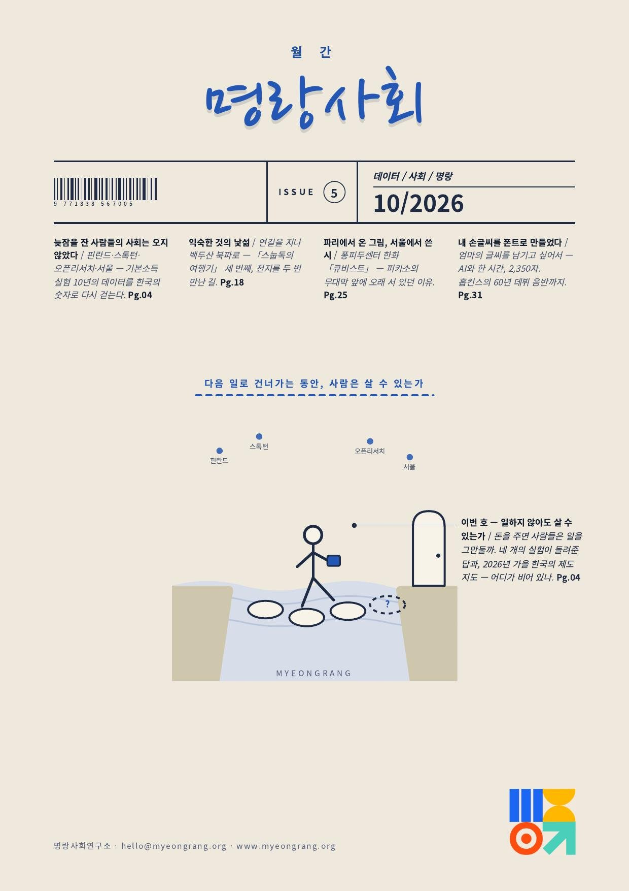
이번 달 나를 붙든 문장은 이것이다. 읽고 나서 며칠을 이 문장과 같이 다녔다.
같은 달, 손민수의 바흐를 들었다. 그의 연주가 숭고하게 들리는 까닭을 한참 생각했는데, 답은 음과 음 사이에 있었다. 한 음에서 다음 음으로 넘어갈 때 그것들은 분명 각각의 음인데도 서로 이어져 있는 것처럼 들린다. 이어졌구나 싶으면 또 저마다 제 소리를 내고 있다. 서로 기대지만 의존하지는 않는, 머물 만큼 머물게 해 주지만 내 것을 희생하지는 않게 하는, 공유하지만 그 누구도 불편해하지 않는 그 오묘한 거리감. 그것이 숭고함의 정체였다.
그 거리는 무엇으로 만들어지는 걸까. 나는 '여유'라고 답하고 싶다. 그런데 이 여유는 많이 가져서 생기는 것이 아니다. 많이 가진 사람의 손이 오히려 더 꽉 쥐어져 있는 것을 우리는 자주 본다. 여유는 손에 든 것의 양이 아니라 손에 든 것을 쥐는 힘에서 나온다. 느슨하게 쥐고 있을 때 비로소 손가락 사이에 틈이 생기고, 그 틈으로 다음 음이 들어온다.
그렇다면 느슨하게 쥐는 것은 결국 나를 지키는 방법이 아닐까. 지킨다는 말을 우리는 오랜 세월 움켜쥐는 것과 같은 뜻으로 써 왔다. 놓치지 않으려고 힘을 주고, 힘을 주느라 정작 쥐고 있는 것이 무엇인지 잊는다. 그러다 와이너의 말처럼 부서진다. 꼭 움켜쥐는 것이 지키는 것이 아니라는 걸, 이번 달에야 손으로 알았다.
이번 호 특집이 묻는 것도 결국 같은 질문이다. 일과 일 사이, 사람은 얼마나 느슨하게 쥐어도 되는가. 돈을 주면 사람들이 일을 그만두고 놀 것이라는 걱정은 오래됐지만, 실험의 데이터는 그렇게 말하지 않는다. 조금 느슨해진 손으로 그들은 대체로 출근했고, 더러는 쉬었고, 더러는 배웠다. 부서진 것은 없었다.
그러니 남은 2026년은 조금 느슨하게 쥐어 보는 건 어떨까. 바흐의 음들처럼, 기대되 매달리지 않고, 머물되 붙들지 않고. 작은 기쁨은 그렇게 쥐어야만 손안에 남는다. — 편집장 박지민
10월은 무척 빨리 지나갔다. 월초에 강원도를 다녀왔고, 계절을 맞이하러 이곳저곳을 다녔다. 오래된 카메라들을 꺼내 동네를 산책하며 기록했다. 20년 전, 카메라를 목에 걸고 자전거로 출퇴근하던 시절이 떠올랐다. 그 사이사이로 처리해야 할 개인적인 일들이 불쑥불쑥 튀어나오는 희한한 달이기도 했다. 월말에는 괜히 준비했던 시험을 치르느라 오랜만에 공부라는 것을 해 봤다. 암기하는 공부는 나에게 샤프 구매욕만 끌어내더라. 열댓 개는 산 것 같다. 그중 최고는 언젠가 소개할 날이 오겠지.
그러다 보니 어느새 10월호 출간일이다. 이번 호는 '느슨한 공동체'의 연결이 아니라 기본소득을 생각해 본다. 사실 월간 명랑사회는 여러 사람에게서 원고를 받아 혼자 편집한다. 이 과정에서 물론 AI의 도움을 받고 있다. 아니, 도움을 받는다는 표현은 적절하지 않다. 나는 AI를 고용했다고 말하는 편이 맞을 것이다. 같은 수준의 사람을 고용했다면 열 배의 비용을 치렀을 테니 말이다.
사용자로 일하는 동안 가장 힘들었던 것이 노무관리였다는 점을 생각하면, 그때 AI가 있었다면 나는 번아웃이 오지 않았을 수도 있고, 그렇다면 조기 은퇴를 하지 않았을 수도 있었겠다는 생각까지 든다. 그러니 이 이야기를 하지 않을 수가 없다. AI가 일을 가져가는 시대에 사람은 무엇으로 사는가. 그래서 이번 호는 리프레시하는 마음으로 이 주제를 한번 읽어 보았다. 열 개의 실험이 돌려준 답은 생각보다 단순했고, 그 단순한 답을 한국의 숫자로 다시 걸어 보았다.
바람이 제법 차다. 느슨하게 쥐고, 천천히 읽어 주시기를. — 발행인 박지민
| 면 | 코너 | 제목 |
|---|---|---|
| 02 | 편집장 왈 ④ | 느슨하게 쥐기 — 에릭 와이너의 한 문장과 손민수의 바흐, 그리고 남은 2026년 |
| 04 | 특집 일하지 않아도 살 수 있는가 | 기본소득 실험 10년의 데이터 — 늦잠을 잔 사람들의 사회는 오지 않았다 |
| 05 | 특집 · 여는 글 | 네 가지 이름 — 기본소득·보장소득·부의 소득세·참여소득 · 오래된 질문(1516–1996) |
| 07 | 특집 · 네 개의 실험 | 핀란드 · 스톡턴 SEED · 오픈리서치 · 서울 디딤돌소득, 그리고 케냐 |
| 12 | 특집 · 겹쳐 읽기 | 네 실험 비교표와 세 가지 발견, 그리고 한계 |
| 13 | 특집 · 지금, 한국 | 일의 입구 — AI와 22–25세 · 제도 지도 — 어디가 비어 있나 |
| 17 | 특집 맺음 | 질문을 다시 놓기 — 다음 일로 건너가는 동안, 사람은 살 수 있는가 |
| 18 | 스눕독의 여행기 ③ | 익숙한 것의 낯섦 — 백두산 가는 길 |
| 22 | 명랑 건강 ④ | 종아리가 심장을 돕는다 — 앉아서도, 서서도 할 수 있는 종아리 근육 펌프 운동 세 가지 |
| 25 | 국내 전시관람기 ② | 파리에서 온 그림, 서울에서 쓴 시 — 퐁피두센터 한화 「큐비스트: 시각의 혁신가들」 |
| 28 | 부리의 명랑음악당 ④ | 음표에 숨기지 않은 서명 — 앤서니 홉킨스, 60년 만의 데뷔 음반 |
| 31 | 맥시멀리스트의 방 ④ | 내 손글씨를 폰트로 만들었다 — AI로 손글씨 폰트 만들기 |
| 34 | 월간 집밥연구소 ④ | with 감자 — 삶고, 굽고, 채 썰고, 쪼개는 감자 네 접시 |
| 36 | 명랑 뷰티 ④ | 내 피부에 필요한 것은 BB크림의 온기 |
| 37 | NEXT | 다음 호 예고 · 판권 |
조건 없는 돈을 받은 사람들은 무엇을 했나 — 네 개의 실험을 원 수치로 다시 읽다
고백하자면 나는 오랫동안 이 명제를 의심하지 않았다. 조건 없이 돈을 주면 사람은 일을 그만둔다. 너무 당연해서 근거를 찾아볼 생각조차 하지 않았다. 내가 그 돈을 받는다면 어떻게 할까를 상상하는 것으로 검증을 대신했고, 상상 속의 나는 대체로 늦잠을 잤다.
그런데 이 명제는 지난 10년 사이 실제로 검증되었다. 그것도 상상이 아니라 무작위 대조 설계로, 한 번이 아니라 여러 번, 적지 않은 돈을 들여서. 핀란드에서, 캘리포니아의 중소도시에서, 텍사스와 일리노이에서, 그리고 서울에서. 실험이 끝나고 보고서가 나왔는데도 논쟁은 여전히 같은 문장에서 시작해 같은 문장에서 끝난다 — "누가 일하겠는가." 데이터가 이미 답한 질문을 놓고 아직도 상상으로 싸우고 있는 셈이다.
이 글은 그 실험들이 실제로 측정한 것을 원 수치로 다시 읽는다. 결론부터 말하면, 늦잠을 잔 사람들의 사회는 어디에도 오지 않았다. 대신 데이터는 다른 것을 돌려주었다. 질문이 잘못 놓여 있었다는 것.
먼저 말을 정리해 둔다. 이 글에서 다루는 네 제도는 엄밀히 보면 서로 다르다. 핀란드는 실업자에게 준 무조건 급여이고, 스톡턴과 오픈리서치는 저소득층에게 준 보장소득이며, 서울의 디딤돌소득은 벌이가 기준선에 못 미치는 만큼의 일정 비율을 채워 주는 부(負)의 소득세, 줄여서 NIT다. 이 글의 네 사례는 모두에게, 조건 없이, 영구적으로 주는 교과서적 기본소득과는 다르다. 그래도 넷은 하나를 공유한다. 일하라는 조건을 걸지 않은 현금이라는 것. 그러니 "일을 그만두게 만드는가"라는 질문에 각자의 방식으로 답할 자격이 있다.
06 오래된 질문 — 모어에서 앳킨슨까지 · 07–11 네 개의 실험 — 핀란드·스톡턴·오픈리서치·서울, 그리고 케냐 · 12 겹쳐 읽기 · 13–16 지금, 한국 — 일의 입구, 제도의 지도, 두 개의 한국 실험 · 17 질문을 다시 놓기
이 질문은 생각보다 오래되었다. 1516년 토머스 모어의 『유토피아』에는 도둑을 교수형에 처하는 대신 먹고살 길을 마련해 주는 편이 낫다는 대목이 나온다. 도둑질의 원인이 사람의 마음이 아니라 조건에 있다는 발상 — 이 연구소가 세 호째 붙들고 있는 문법이 이미 500년 전 문장에 들어 있다. 1797년 토머스 페인은 「토지 정의」에서 모든 사람이 스물한 살이 되면 국가 기금에서 15파운드를 받아야 한다고 썼다. 땅은 원래 모두의 것이었으니, 땅을 사유하게 된 사회는 그 대가를 모두에게 돌려줘야 한다는 논리다. 자선이 아니라 권리라는 것.
그런데 20세기에 이 아이디어를 정책의 언어로 옮긴 사람은 뜻밖에도 시장주의자였다. 밀턴 프리드먼은 1962년 『자본주의와 자유』에서 부의 소득세를 제안했다. 소득이 기준선에 못 미치면 그 차액의 일정 비율을 정부가 세금으로 걷는 대신 거꾸로 지급하자는 것이다. 복지 관료제를 없애고 현금 하나로 대체하자는 뜻이었으니, 좌파의 이상과 우파의 효율이 같은 설계 위에서 만난 드문 순간이었다. 프리드먼의 NIT와 닮은 소득보장 구상은 1969년 닉슨 행정부의 가족부조계획에도 반영되었다 — 다만 그 계획에는 노동 관련 조건이 붙어 있었다. 이 안은 하원을 통과했고, 상원에서 죽었다. 어디서 죽었는지가 중요하다. 좌파는 금액이 적다고 반대했고 우파는 노동 의욕이 꺾인다고 반대했다. 반대의 방향이 정반대였는데 결과는 같았다. 이 패턴은 그 뒤로도 반복된다.
미국은 그 무렵 실제로 실험을 했다. 1968년 뉴저지에서 시작해 1982년까지 이어진 네 개의 주요 NIT 실험이다. 결과는 오늘의 논쟁과 놀랄 만큼 닮았다. 노동 공급은 줄었다. 다만 그 폭은 집단에 따라 달랐고 — 네 실험을 비교한 로빈스(1985)의 환산으로 남편은 연간 2주, 아내와 여성 한부모는 3주, 청년은 4주쯤 — 대량 이탈은 아니었다. 그런데 시애틀·덴버 실험에서 이혼율이 높아졌다는 분석이 나오자 정치는 그 한 줄만 기억했다. 후속 재분석은 순수 NIT가 혼인 해체를 늘렸다는 해석에 이의를 제기했지만, 그 논쟁이 벌어졌을 때 실험은 이미 끝나 있었다.
캐나다의 마니토바주 도핀이라는 소도시에서 1974년부터 5년간 진행된 '민컴'은 더 극적인 운명을 맞았다. 정권이 바뀌면서 예산이 끊겼고, 수집된 자료는 분석도 되지 않은 채 1,800세제곱피트 분량으로 창고에 들어갔다. 30년 뒤 경제학자 이블린 포겟은 그 상자 대신 마니토바주의 건강 행정자료를 꺼내 도핀 주민의 변화를 비교했다. 2011년 발표된 연구에서 도핀의 병원 입원은 8.5퍼센트 줄었고, 정신건강 관련 진료가 특히 감소했으며, 11학년에서 12학년으로 학업을 이어 가는 청소년이 늘었다. 다만 건강 효과의 인과 해석에는 2022년 그린의 재분석과 포겟의 재반론이 남아 있다. 창고의 상자가 40년 뒤에 열렸다는 사실만은 분명하다.
이 계보에서 유일하게 실험이 아니라 제도가 된 것이 알래스카다. 1982년부터 석유 수입을 기금으로 굴려 주민 모두에게 해마다 배당을 준다. 액수는 해에 따라 다르고 2025년은 1,000달러였다. 40년 넘게 자격을 갖춘 주민 모두가 조건 없는 돈을 받아 온 곳인데, 존스와 마리네스쿠의 연구(2018년 작업논문, 2022년 게재)는 이 배당이 전체 고용에 유의한 영향을 주었다는 증거를 찾지 못했다. 파트타임 노동은 1.8퍼센트포인트 늘었다. 돈이 돌면서 일자리도 함께 늘어난 탓으로 해석된다.
그리고 1990년대 유럽에서 이 논의는 철학의 문제가 되었다. 필리프 판 파레이스는 1995년 『모두에게 실질적 자유를』에서 기본소득을 자유의 조건으로 놓았다. 하고 싶은 것을 할 수 있는 자유는 형식이 아니라 실질이어야 하고, 실질적 자유에는 밥값이 든다는 것. 같은 시기 앤서니 앳킨슨은 조금 다른 길을 냈다. 아무 조건 없는 돈은 정치적으로 통과되기 어려우니, 돌봄·자원봉사·교육처럼 사회에 기여하는 활동을 넓게 인정하고 그 대가로 지급하자는 참여소득이다. 2026년 한국 정부가 검토하는 모델이 바로 이것이니, 뒤에서 다시 만나게 될 이름이다.
계보를 이렇게 길게 적은 이유는 하나다. 이 질문은 새롭지 않고, 답도 여러 번 나왔다. 다만 답이 나올 때마다 정치가 상자에 넣어 창고로 보냈다. 지난 10년의 실험들은 그 상자를 다시 열어 본 것이다.
실험 하나 · 핀란드 2017–2018
2017년 1월, 핀란드 사회보험청 켈라는 실업급여를 받던 25세부터 58세까지의 국민 가운데 2,000명을 무작위로 뽑아 2년 동안 매달 560유로를 조건 없이 지급했다. 이 실험의 특징은 강제 참여였다. 뽑힌 사람은 거절할 수 없었다. 자원자만 모으면 결과가 왜곡된다는 이유였고, 자원자의 편향을 줄인 설계다. 일을 하지 않던 사람들의 취업이 어떻게 달라지는가를 본 실험이라는 점도 기억해 두자. 취업을 해도 돈은 끊기지 않았다. 바로 이 점이 실험의 핵심이었다. 핀란드 실업급여는 일을 시작하면 줄어드는 구조라, 일을 해도 손에 남는 게 별로 없다는 불만이 오래된 문제였다. 정부가 알고 싶었던 것은 "돈을 주면 일을 그만두는가"가 아니라 오히려 "급여를 끊지 않으면 일을 더 하는가"였다.
2020년 5월에 나온 최종 평가는 양쪽을 다 실망시켰다. 2017년 11월부터 2018년 10월까지의 취업일수는 기본소득 집단 78일, 대조군 73일 — 공식 평가의 추정치로 약 6일 차이다. 통계적으로는 유의했지만 정책이 기대한 크기는 아니었고, 첫해에는 고용 효과가 확인되지 않았으며, 후반 결과는 같은 시기에 도입된 구직 활성화 정책과 겹쳐 있어서 어느 쪽 효과인지 깔끔하게 나누기 어렵다. 일을 그만두게 하지도, 일자리로 돌려보내지도 않은 것이다.
대신 다른 자리에서 효과가 나왔다. 2018년 말 설문에 답한 사람들의 삶의 만족도는 10점 만점에 7.32 대 6.76 — 응답률이 31퍼센트와 20퍼센트로 달랐으니 전체 참여자의 효과로 넓혀 읽을 때는 조심해야 하는 숫자다. 스트레스와 우울, 외로움은 뚜렷하게 줄었고, 제도와 타인에 대한 신뢰는 올라갔다. 인지 기능 — 기억, 집중, 새로운 것을 배우는 능력 — 도 더 낫다고 응답했다. 관료와의 씨름이 사라진 것의 효과라는 해석이 있다. 실업급여 수급자는 구직 활동을 증명하고, 서류를 내고, 소득이 생기면 신고하고, 잘못 신고하면 환수당한다. 그 절차가 사라지자 사람들은 우선 마음이 편해졌다. 마음이 편해진 것이 6일을 더 일하게 했는가 — 그 연결은 이 결과만으로는 확인할 수 없다. 두 변화가 같은 실험에서 함께 관측되었다는 것까지가 데이터다.
실업급여 수급자 25–58세 2,000명 무작위 선정(강제 참여) · 2년간 월 560유로 · 취업해도 지급 유지 · 켈라(Kela) 최종 평가 2020. 5.
실험 둘 · 스톡턴 SEED 2019–2021
캘리포니아주 스톡턴은 2012년 당시 미국에서 가장 큰 파산 신청 도시였다. 그 도시의 젊은 시장 마이클 텁스가 2019년 2월에 시작한 것이 SEED 실험이다. 중위소득 이하 지역에 사는 주민 125명에게 2년간 매달 500달러를 직불카드로 주었다. 조건도 없고 보고 의무도 없었다. 재원은 시 예산이 아니라 민간 기부였다. 표본이 작다는 점은 처음부터 약점이었고, 그래서 이 실험은 규모보다 정밀도로 승부했다. 연구진은 카드 사용 내역을 항목별로 추적했고, 대조군 200명과 함께 6개월마다 자세한 설문을 했다.
2021년 3월에 나온 1년차 중간보고서가 이 실험을 유명하게 만들었다. 수급 집단의 풀타임 고용률은 실험 시작 때 28퍼센트에서 1년 뒤 40퍼센트로 올랐고, 같은 기간 대조군은 32퍼센트에서 37퍼센트였다. 다만 이것은 각 집단 안의 전후 변화이지 현금의 효과를 통계적으로 확정한 수치가 아니다. 2023년 학술지에 실린 후속 분석은 고용에서 두 집단의 유의한 차이를 확인하지 못했고, 조사 탈락이 많았다는 점을 적어 두었다. 추적 가능한 카드 지출에서는 식료품이 약 37퍼센트였고, 그다음이 생활용품과 공과금, 자동차 유지비였다. 술과 담배는 1퍼센트가 되지 않았다 — 카드 밖으로 옮긴 돈의 용도는 알 수 없다는 전제에서다. 불안과 우울 지표는 첫해에 유의하게 개선되었고, 월 소득이 들쭉날쭉한 정도가 줄었다.
연구진이 면담에서 들은 이야기가 이 실험의 진짜 성과다. 소득에 바닥이 생기자 어떤 참가자는 두세 개의 아르바이트를 동시에 지키는 대신 하나를 놓고 더 나은 일자리를 알아보았고, 어떤 참가자는 1년 넘게 미뤄 온 자격증 시험을 봤으며, 어떤 참가자는 시간을 내서 면접을 다녔다. 평균을 바꿨다고 입증된 것은 아니지만, 이 사람들에게 500달러는 생활비가 아니라 시간을 사는 돈이었다.
물론 125명이다. 이 수치를 미국 전체로 늘려 읽으면 안 된다. 다만 이 실험이 보여 준 그림은 분명했고, 그 뒤 미국의 여러 도시가 비슷한 보장소득 실험에 뛰어들었다.
실험 셋 · 오픈리서치 2020–2023
셋 중 가장 큰 실험을 돈 댄 사람이 샘 올트먼이라는 사실은 이 논쟁의 2020년대적 성격을 말해 준다. 인공지능이 일자리를 흔들 것이라고 믿는 사람이, 그렇다면 조건 없는 돈이 답이 될 수 있는지를 자기 돈으로 물어본 것이다. 오픈리서치의 무조건 현금 연구는 2020년 11월부터 3년간 텍사스와 일리노이의 21세부터 40세 저소득층 1,000명에게 매달 1,000달러를 주었다. 대조군 2,000명에게도 조건 없이 매달 50달러를 주었다. 3년간 3만 6,000달러, 연간으로 1만 2,000달러 — 등록 당시 참가자 평균 가구 연소득(2만 9,991달러)의 40퍼센트에 해당하는 액수다. 이 정도면 "돈이 적어서 효과가 없었다"는 변명은 통하지 않는다.
2024년 7월에 나온 결과는 불편했다. 설문 기준으로 고용률은 대조군보다 2퍼센트포인트 낮았고, 주당 노동시간은 1.3시간 줄었으며, 지난 1년간 일한 기간은 0.26개월 짧았다. 배우자와 성인 가족의 노동시간도 함께 줄었다. 2026년 『계간 경제학 저널(QJE)』에 실린 게재본은 설문과 행정자료를 합쳐 다시 추정했고, 노동시장 참여는 4.2퍼센트포인트 낮았으며, 이전소득을 뺀 개인 소득은 연 1,900달러쯤 적었다. 측정이 다르니 "효과가 두 배가 됐다"는 뜻은 아니지만, 방향은 같다. 앞의 두 실험이 보여준 그림과 달랐고, 기본소득 반대론자들은 이 수치를 곧바로 인용했다. 봐라, 일을 덜 하지 않았느냐.
맞다. 덜 했다. 문제는 그 시간이 어디로 갔느냐다. 노동 감소는 한부모 가구와 30세 미만에 집중되었다. 줄어든 시간 가운데 가장 큰 몫은 여가로 갔다 — 연구진은 이를 숨기지 않았고, 2026년 게재본도 줄어든 노동이 다른 생산적 활동으로 상쇄되었다는 근거는 찾지 못했다고 정리한다. 그 위에 작은 변화들이 있다. 마지막 해의 교육·훈련 참여는 3.3퍼센트포인트 높았고(대조군 대비 14퍼센트), 가장 가난한 층에서는 더 컸지만, 여러 지표를 함께 검정하면 대부분의 교육 효과는 확실하다고 보기 어렵다. 3년차에 사업 아이디어를 가진 사람이 5퍼센트포인트 많았고, 흑인 참가자와 여성 참가자 가운데 창업하거나 창업을 도운 경험은 각각 9퍼센트포인트와 5퍼센트포인트 많았다 — 탐색적 결과다. 남을 돕는 데 쓴 돈 — 선물, 빌려준 돈, 기부, 가족 부조 — 은 월평균 22달러, 26퍼센트 늘었다는 대목은 몇 번을 읽어도 마음이 간다. 남성 하위집단에서는 위험 음주가 41퍼센트, 처방 없는 진통제를 쓴 날이 81퍼센트 줄었다. 이사를 알아보는 사람도, 실제로 이사한 사람도 늘었다. 2025년 7월에 따로 나온 분석에서는 부모가 아이에게 쓰는 돈이 늘고, 아이를 더 가까이서 지켜보고 더 일관되게 훈육했다는 결과가 더해졌다. 아이의 학업 지표는 3년 안에 유의하게 달라지지 않았고, 마지막 해에는 부모의 스트레스가 — 특히 한부모에서 — 다시 높아졌다.
실험 셋 · 오픈리서치 (계속)
| 줄어든 노동시간이 간 곳 | 수치 |
|---|---|
| 여가 | 늘어난 시간 가운데 가장 큰 항목 — 2026년 게재본: 생산적 활동으로 상쇄됐다는 근거 없음 |
| 교육·훈련 참여 | 마지막 해 +3.3%p (대조군 대비 14%) · 다중비교 보정 후 대부분 비유의 |
| 창업(탐색적) | 3년차 사업 아이디어 +5%p · 창업/창업 지원 경험: 흑인 +9%p, 여성 +5%p |
| 남을 돕는 지출 | 선물·대여금·기부·부양 포함 월 +22달러 (+26%) |
| 건강 행동(남성 하위집단) | 위험 음주 −41% · 처방 없는 진통제 사용일 −81% · 신체건강 유의한 개선 없음 |
| 양육(2025 분석) | 자녀 지출↑, 감독·일관된 훈육↑ · 학업 지표 비유의 · 마지막 해 부모 스트레스↑ |
이 실험에서 정작 눈여겨볼 것은 건강 보고서에 있다. 첫해에는 병원 이용이 늘고 음주가 줄고 식료품 지출이 늘었지만, 신체건강이 좋아졌다는 유의한 증거는 3년 내내 나오지 않았다. 스트레스와 정신적 고통은 첫해에 뚜렷이 줄었다가 2년차부터 약해져 원래 수준으로 돌아갔다. 왜 약해졌는지는 이 연구로 확정할 수 없다. 이 결과를 "기본소득은 효과가 없다"로 읽는 사람과 "3년은 사람의 삶을 바꾸기에 짧다"로 읽는 사람이 있고, 나는 후자에 가깝지만 그 판단이 데이터에서 나온 것은 아니다. 그건 내 편향이다.
그래서 이 실험의 결론은 이렇게 적는 게 정직하다. 조건 없는 돈은 노동을 조금 줄였고, 늘어난 시간의 가장 큰 몫은 여가였으며, 교육·창업·돌봄의 변화는 일부 집단에서 작게 나타났고, 마음의 효과는 첫해에 강했으나 오래가지 않았다. 네 문장 모두 참이다. 어느 한 문장만 인용하는 쪽이 논쟁을 하고 있는 것이다.
부자 나라의 실험만 읽으면 반쪽이다. 기브다이렉틀리가 2018년부터 케냐 보메트·시아야 두 카운티의 295개 마을(지원 195, 통제 100)에서 진행 중인 실험은 셋 중 무엇을 줄 것인가를 물었다. 한 집단은 12년간 매달 22.5달러를, 한 집단은 2년간 같은 금액을, 한 집단은 500달러를 한꺼번에(송금 한도 때문에 두 번에 나눠) 받았다. 2023년 12월에 나온 첫 2년 결과에서, 돈을 받은 사람들은 일을 덜 하지 않았다. 남의 밭에서 품을 파는 일에서 자기 장사로 옮겨 갔을 뿐 총 노동시간은 줄지 않았다. 장기 약속과 일시금을 받은 쪽이 단기 월 지급보다 여러 사업 지표에서 나았고, 12년을 약속받은 쪽은 회전저축모임 참여가 더 많았으며, 매달 받은 쪽이 우울을 가장 많이 줄였다. 12년 실험의 2년차 결과라는 점은 기억해 두자. 같은 돈이 어떻게 오느냐에 따라 사람이 하는 일이 달라진 것이다. 앞으로의 설계 논쟁에서 이 결과는 생각보다 자주 인용될 것이다.
실험 넷 · 서울 디딤돌소득 2022–2025
서울시의 디딤돌소득은 처음 이름이 안심소득이었다. 2022년 7월 시작해 2025년까지 진행된 이 시범사업은 위의 셋과 설계가 다르다. 기준 중위소득 85퍼센트 이하(재산 기준 별도) 가구에, 기준소득과 평가소득의 차액 절반을 준다. 소득이 0인 1인 가구라면 2025년 기준 매달 90만 원 남짓, 벌이가 늘면 지급액은 서서히 줄고, 기준을 넘으면 중단된다. 어려울수록 더 받고, 형편이 나아진다고 절벽처럼 끊기지는 않는다. 프리드먼이 1962년에 제안한 바로 그 설계다. 1차 484가구(3년), 2차 1,100가구(2년), 합쳐 1,584가구를 지원하고 비교집단을 두었다.
한국 기초생활보장제도가 오래 비판받아 온 지점이 여기다. 생계급여 자체는 차액을 보충하고 근로소득 공제도 있지만, 수급 자격을 잃는 순간 의료·주거 같은 다른 급여까지 함께 끊기니 조금 더 벌면 오히려 손해가 되는 구간이 생긴다. 일을 안 하는 게 아니라 일을 숨기게 만드는 구조다. 디딤돌소득이 검증하려 한 것은 이 절벽을 완만하게 하면 사람들이 더 버는가였다.
2024년 10월과 2025년 12월 서울시가 국제포럼에서 공개한 서울대 연구진의 평가 요약에 따르면, 지원 가구 가운데 소득이 기준 중위소득 85퍼센트를 넘어 지급이 중단된, 이른바 탈수급 가구의 비율은 1차년도 4.8퍼센트에서 2차년도 8.6퍼센트로 올랐고 3차년도에 전년보다 1.1퍼센트포인트 더 높아졌다. 근로소득이 늘어난 가구는 2차년도 31.1퍼센트에서 3차년도에 2.8퍼센트포인트 더 늘었다 — 둘 다 전년 대비이지 비교집단 대비 순효과는 아니다. 식료품과 교통 같은 필수 지출이 늘고, 정신건강과 영양 지표가 좋아졌다. 그리고 여기서도 노동은 일부 줄었다. 가구주가 일을 하고 있는 비율이 10.4퍼센트포인트 낮았는데, 연구진은 교육과 의료 지출이 함께 늘어난 것을 보고 이를 사람에 대한 투자의 가능성으로 해석했다. 가구주가 아닌 구성원의 노동은 줄지 않았고, 지원 가구의 월평균 가구소득은 비교집단보다 25만 원 높았다. 일을 그만두게 만든다던 제도에서 탈수급과 근로소득 증가가 함께 관측된 것이다.
이 실험의 한계도 적어 둔다. 무작위 배정은 했지만 지원 가구는 자기가 지원 대상이라는 것을 알고 있었고, 지금까지 공개된 것은 평가의 요약이지 세부 추정표가 아니다. 비교집단과의 차이가 어디까지 통계적으로 유의한지, 가구소득 25만 원에 지원금이 포함되는지는 원자료가 공개되는 대로 확인해 홈페이지 보고서에 붙일 것이다. 그럼에도 이 실험이 중요한 이유는 한국의 실제 복지제도 옆에서, 한국의 물가와 노동시장 안에서 돌아갔다는 것이다. 헬싱키의 수치를 서울에 옮겨 오려면 환율 말고도 바꿔야 할 게 너무 많다.
| 핀란드 | 스톡턴 SEED | 오픈리서치 | 서울 디딤돌소득 | |
|---|---|---|---|---|
| 기간 | 2017–18 (2년) | 2019–21 (2년) | 2020–23 (3년) | 2022–25 (2~3년) |
| 대상 | 실업자 2,000명 | 저소득 지역 주민 125명 | 21–40세 저소득 1,000명 | 중위 85% 이하 1,584가구 |
| 금액 | 월 560유로 | 월 500달러 | 월 1,000달러 | 기준·평가소득 차액의 50% |
| 설계 | 무조건 급여 | 보장소득 | 보장소득 | NIT(하후상박) |
| 일 — 측정한 것 | 취업일수: 대조군보다 약 6일 많음 | 풀타임 비율: 지원 28→40%, 대조 32→37% (집단 내 전후) | 노동시장 참여 −4.2%p, 주 1~2시간↓ (통합자료) | 가구주 근로 여부 −10.4%p · 탈수급 4.8%→8.6% |
| 함께 읽을 한계 | 첫해 효과 없음, 활성화 정책 중첩 | 후속 논문 고용 차이 비유의, 조사 탈락 | 2024 설문 요약은 −2%p; 늘어난 시간의 최대 항목은 여가 | 시 공개 요약, 전년 대비 수치 |
| 마음 | 응답자 만족도 7.32 대 6.76 | 첫해 불안·우울 감소 | 첫해 개선 후 감쇠 | 정신건강·영양 개선 |
네 실험을 겹쳐 놓으면 세 가지가 보인다.
일을 놓는 사람들의 사회는 어디에도 오지 않았다.가장 큰 감소가 오픈리서치의 노동시장 참여 4.2퍼센트포인트, 디딤돌의 가구주 근로 비율 10.4퍼센트포인트다. 적지 않은 숫자지만, 스무 명 가운데 한두 명이 일을 멈춘 것이지 사회가 멈춘 것은 아니다. 핀란드는 그대로였고, 스톡턴은 확정할 수 없었으며, 케냐는 일의 종류가 바뀌었다. "누가 일하겠는가"라는 질문에 데이터가 돌려준 답은 "거의 모두가, 계속"이다. 상상 속의 나는 늦잠을 잤지만, 실제 사람들은 대체로 출근했다.
노동이 줄어든 자리를 채운 것은 실험마다 달랐다.오픈리서치에서 가장 큰 항목은 여가였고, 교육과 창업의 변화는 일부 집단에서 작게 나타났다. 서울에서는 교육·의료 지출이 늘었고, 스톡턴에서는 면담한 사람들이 구직과 자격 준비에 시간을 썼다고 말했다. 나는 처음 이 글을 쓸 때 "줄어든 것이 노동이었다면 늘어난 것은 다음 노동의 준비였다"고 적었다. 데이터는 그렇게까지 말하지 않는다. 여가로 간 시간을 다른 이름으로 바꿔 부르지 않는 것이 이 연구소의 문법이라고 믿는다. 쉬는 것도 사람이 하는 일이다.
마음의 개선은 어디서나 보였지만, 어디서나 오래가지는 않았다.그러나 모든 집단과 시점에 지속된 것은 아니다. 오픈리서치에서는 첫해의 개선이 이후 사라졌고 마지막 해에 부모의 스트레스는 오히려 높아졌다. 핀란드의 만족도는 응답률이 낮은 설문에서 나온 숫자다. 척도와 기간이 다른 결과를 한 줄로 세울 수는 없다. 돈이 마음에 닿는다는 것까지가 데이터이고, 얼마나 오래 닿는지는 아직 열린 질문이다.
이 실험들을 지금 다시 읽는 이유는 세 가지 일이 동시에 벌어지고 있어서다.
하나는 일의 입구가 좁아지고 있다는 것이다. 스탠퍼드 디지털경제연구소가 미국 최대 급여처리업체 ADP의 자료로 추적한 분석은 2025년 8월 처음 나왔고, 2026년 8월에 갱신되었다. 인공지능에 많이 노출된 직군 — 소프트웨어 개발, 고객 상담 — 에서 22세부터 25세의 고용은, 노출이 적은 직군의 같은 나이대가 걸어온 길을 그대로 걸었다면 있었을 수준보다 19퍼센트 낮다. 2026년 6월 자료 기준이다. 1년 전 처음 발표 때는 15퍼센트였고, 그 뒤 꾸준히 벌어졌다. 같은 직군의 30대 이상 고용은 오히려 안정적이거나 늘었다. 연구진은 이 숫자가 인공지능의 효과를 인과적으로 추정한 것이 아니라 미국 한 급여처리업체 표본에서 관찰된 패턴이라고 거듭 적어 두었고, 나도 그렇게 읽는다. 다만 패턴의 모양은 분명하다. 경제 전체의 대량 해고는 없다. 충격은 해고의 형태가 아니라 신규 채용이 줄어드는 형태로 온다. 그 표본에서는, 경력이 없는 사람이 경력을 쌓을 첫 자리가 줄고 있었다. 한국에 같은 일이 벌어지고 있다는 증거는 아직 없다. 한국은행은 2023년 분석에서 국내 취업자의 약 12퍼센트, 341만 명이 인공지능으로 대체될 가능성이 큰 직업에 있다고 추정했다 — 실제로 사라진 일자리 수가 아니라 노출도의 추정이다. 자동화의 일차 피해자는 '일자리를 잃는 사람'이기 전에 '첫 일자리와 다음 일자리 사이에 갇히는 사람'이다.
다른 하나는 제도가 움직이기 시작했다는 것이다. 2026년 3월 보건복지부는 기본사회기획단 안에 중앙부처 최초의 기본소득기획팀을 두었고, 4월에는 '기본소득 도입방안 연구' 용역 발주가 보도되었다. 7월 17일 정은경 장관은 라디오에서 청년 소득보장 시범사업을 "내년에라도" 하는 것이 목표라고 말했고, 검토 중인 길은 둘이라고 했다. 모두에게 주는 보편 수당과, 사회적으로 가치 있는 활동에 참여하는 사람에게 주는 참여소득. 같은 날 복지부는 "청년 참여소득 도입은 정해진 바 없다"는 설명자료를 냈다. 그리고 9월 1일 국무회의를 통과한 2027년 복지부 예산안 발표 자료에는 — 아동기본수당, 기준 중위소득 6.7퍼센트 인상, 기초연금 차등 지급, 위기가구 30만 원 선지급은 들어갔지만 — 기본소득이든 참여소득이든 그 이름을 단 시범사업 항목을 찾지 못했다. 세부 사업설명서 전체를 대조한 것은 아니고, 국회 심의에서 들어갈 수도 있다. 10월 22일 확인 기준으로는 "연구는 발주되었고, 장관은 내년을 말했고, 구체적 시행계획은 확인되지 않았다"가 정확한 문장이다. 앳킨슨이 1996년에 낸 참여소득의 길을 30년 뒤 서울이 걷겠다는 뜻은 분명하지만, 발걸음은 아직 떼지 않았다.
세 번째는, 이 글을 9월에 처음 쓸 때 내가 빠뜨린 사실이다. 한국에서 조건 없는 돈이 올해 2월부터 다달이 실제로 지급되고 있다. 농어촌에서다. 뒤에서 따로 적는다.
그러면 지금 한국에서 일과 일 사이에 놓인 사람은 무엇을 받을 수 있나. 2026년의 제도 지형을 있는 그대로 적고, 2027년 예산안이 바꾸는 것을 그 옆에 적는다.
실업급여는 일반 근로자의 경우 이직 전 18개월 안에 보수를 받은 날(피보험단위기간)이 180일 이상이어야 받는다. 주 5일 근무자는 대개 7~8개월을 꼬박 다녀야 채워지는 일수다. 2026년 기준 하루 8시간 근로자의 하한액은 6만 6,048원, 상한액은 6만 8,100원으로 폭이 2,000원 남짓이고, 받는 기간은 나이와 가입 기간에 따라 120일에서 270일이다. 첫 직장을 구하지 못한 사람은 애초에 대상이 아니고, 정당한 사유 없이 스스로 그만둔 사람도 원칙적으로 대상이 아니다. 고용노동부는 35세 미만의 생애 첫 자발적 이직자에게도 구직급여를 주는 안을 추진·검토 중이라고 8월에 밝혔는데, 법을 고쳐야 하는 일이라 아직 권리가 된 것은 아니다.
국민취업지원제도는 그 바깥을 겨냥한다. 2026년 구직촉진수당 기본액은 월 60만 원, 최대 6개월, 그러니까 360만 원이다. I유형에는 소득·재산을 심사하는 요건심사형과, 취업 경험이 부족한 청년도 들어올 수 있는 선발형이 있고 — 청년은 중위소득 120퍼센트, 재산 5억 원까지 — 어느 쪽이든 상담사와 취업활동계획을 세우고 매달 활동을 보고해야 한다. 안 하면 끊긴다. 돈이 붙어 있는 곳에는 조건이 붙어 있다. 2027년 정부안은 이 수당을 65만 원으로 올리고, 2028년 70만 원을 중기 목표로 둔다.
여기서 2027년 정부 예산안이 한 가지를 바꾼다. 고용노동부 예산안에 '청년 첫 취업지원제도'가 들어갔다. 일한 경험이 없는 청년 16만 명이 대상이고 예산은 3,793억 원이다 — 보도에 따르면 저소득 청년 12만 명에게 구직수당 월 65만 원을 최대 6개월 주고 나머지 4만 명에게는 취업활동계획과 고용서비스를 제공하며, 재원은 새로 만드는 미래대응기금이지만, 이 세부는 사업설명서로 확인할 것이다. 9월에 이 글을 처음 쓸 때 나는 "학교와 첫 직장 사이의 구간을 통째로 받쳐 주는 제도는 없다"고 적었다. 정확히는 지금도 국민취업지원제도 선발형이 경력 없는 청년을 받고 있고, 2027년 안은 그 문을 넓히고 이름을 붙이는 것이다. 받침이 두꺼워진다. 다만 그 받침의 모양을 정확히 보아야 한다. 6개월이고, 저소득층에 한하며, 활동계획을 세우고 보고해야 받는 돈이다. 조건 없는 바닥을 깐 것은 아니다.
| 일과 일 사이에 놓인 사람 | 2026년에 받을 수 있는 것 | 2027년 예산안이 바꾸는 것 |
|---|---|---|
| 실직 → 재취업 | 실업급여: 18개월 중 피보험단위기간 180일 · 하루 6만 6,048~6만 8,100원(8시간 기준) · 120~270일 · 정당한 사유 없는 자발적 이직 제외 | 35세 미만 생애 첫 자발적 이직자 구직급여 추진·검토(법 개정 필요) |
| 조건을 채우는 구직자 | 국민취업지원제도 I유형: 월 60만 원 최대 6개월 · 요건심사형(중위 60%) / 선발형(청년 120%, 취업 경험 없어도 가능) · 활동계획·월 보고 | 구직촉진수당 65만 원(정부안, 2028년 70만 원 중기 목표) |
| 학교 → 첫 직장 | 조건 없이 받치는 제도 없음 — 국취제 선발형(6개월) · 청년수당(서울, 월 50만 원 6개월, 2026년 2만+6천 명 모집) · 경기 청년기본소득(만 24세 한 해, 연 100만 원, 지역화폐) | 청년 첫 취업지원제도(정부안): 경력 없는 청년 16만 명 · 3,793억 원 · 보도상 저소득 12만 명 월 65만 원 최대 6개월 |
| 모두 | 재난지원금(2020) · 민생회복 소비쿠폰(2025, 2차는 상위 10% 제외) — 한시적 · 농어촌 기본소득(17개 군, 월 15만 원 상품권) | 농어촌 기본소득 18개 군 추가·국고보조율 50%(정부안) · 기본소득·참여소득 시범사업: 발표 자료에서 항목 미확인(10/22 기준) |
서울시 청년수당은 19세부터 34세의 미취업 청년에게 월 50만 원을 최대 6개월 준다. 2026년에는 3월에 2만 명, 5월에 6,000명을 더 모집했고, 멘토링과 취업 세미나 참여가 붙는다. 경기도 청년기본소득은 만 24세 한 해 동안 분기마다 25만 원, 1년 100만 원을 지역화폐로 주고, 경기도에 계속 3년 또는 합산 10년 거주해야 한다. 소득도 취업 여부도 묻지 않으니 설계는 기본소득에 가깝지만, 인생에서 딱 한 해다. 그리고 2020년의 재난지원금과 2025년 여름의 민생회복 소비쿠폰이 있었다. 지급 단위와 수단, 2차 지급의 상위 10퍼센트 제외처럼 서로 다른 점이 있지만, 둘 다 한시적이었고, 살라고 준 돈이 아니라 쓰라고 준 돈이었다.
이렇게 적어 놓고 보면 구멍의 모양이 보인다. 2026년의 스물셋은 실업급여의 대상이 아니고, 국민취업지원제도 선발형에 들어갈 수는 있으나 6개월이면 끝나며, 청년수당은 모집 인원이 정해져 있고, 경기도 청년기본소득은 24세 한 해다. 2027년의 스물셋 앞에는 조금 더 넓어진 문이 있다. 구멍이 작아지는 것은 사실이다. 그러나 메워지는 방식은 하나같이 같다. 기한이 있고, 조건이 있고, 서류가 있다.
그런데 한국에는 지금 성격이 정반대인 두 실험이 동시에 돌아가고 있다. 하나는 앞에서 읽은 서울의 디딤돌소득이다. 어려울수록 더 주고, 벌이가 늘면 서서히 줄이는 NIT. 조건은 소득이고, 소득을 묻기 때문에 서류가 있다. 2025년 12월 3차년도 평가까지 나왔고, 서울시는 이 모델을 전국으로 넓히자고 말한다.
다른 하나는 농어촌 기본소득 시범사업이다. 농림축산식품부가 인구감소지역 10개 군 — 연천, 정선, 옥천, 청양, 장수, 순창, 곡성, 신안, 영양, 남해 — 을 뽑아 2026년 2월부터 주민 한 사람에게 매달 15만 원을 지역사랑상품권으로 주고 있다. 소득을 묻지 않고, 나이를 묻지 않고, 일하는지를 묻지 않는다. 그 군에 주민등록을 두고 실제로 살며 신청하면 받는다. 6월 11일에는 화천, 보은, 진안, 무주, 구례, 보성, 청송 일곱 군이 더해져 열일곱 군이 되었고, 추가 선정에는 59개 군 가운데 44개 군이 신청했다. 추경으로 706억 원을 확보해 19만 6,000명이 대상에 더해졌다. 10월 8일 농식품부는 2027년에 18개 군 안팎을 더 뽑는 공모를 냈고, 2027년 정부안은 국고보조율을 40퍼센트에서 50퍼센트로 올린다. 쓸 수 있는 곳이 정해진 상품권이라 교과서의 “자유로운 현금”과는 다르지만, 이름에 기본소득이 들어간 현행 제도 가운데 설계가 교과서에 가장 가까운 것이 바로 이것이다. 거주하는 모두에게, 소득과 일 여부를 묻지 않고, 다달이.
두 실험은 묻는 것이 다르다. 디딤돌은 "가난한 사람에게 절벽 없이 돈을 주면 더 버는가"를 묻고, 농어촌 기본소득은 "한 지역의 모든 사람에게 조건 없이 돈을 주면 그 지역이 사는가"를 묻는다. 농식품부는 6월 발표에서 기존 10개 군의 인구가 4.7퍼센트 늘고 신규 가맹점이 13.7퍼센트 늘었다고 집계했다. 이 숫자는 정부가 스스로 낸 것이고, 비교집단이 없으며, 지급 몇 달 만의 수치다. 인구가 늘었다면 전입 신고를 한 사람이 늘었다는 뜻이고, 그 사람이 실제로 거기서 사는지는 다른 문제다. 그러니 이 수치를 기본소득의 성과로 읽는 것은 아직 이르다. 다만 한 가지는 분명하다. 핀란드와 스톡턴과 서울이 2,000명, 125명, 1,600가구를 놓고 물었던 질문을, 한국은 지금 수십만 명을 놓고 묻고 있다. 제대로 측정만 한다면 — 비교 가능한 이웃 군을 두고, 전입이 아니라 거주를 세고, 상품권이 어디서 쓰였는지를 추적한다면 — 이것은 세계에서 가장 큰 기본소득 실험 가운데 하나가 된다. 비교집단을 둔 평가가 없다면, 도핀의 상자가 하나 더 생길 뿐이다.
네 실험이 일관되게 보여준 조건 없는 돈의 쓸모는 노동을 대신하는 것이 아니었다. 건너가는 동안 버티게 하는 것이었다. 실직과 재취업 사이, 학교와 첫 직장 사이, 돌봄과 노동 사이, 나쁜 일자리와 덜 나쁜 일자리 사이. 스톡턴의 500달러는 그 사이를 건너는 동안 아르바이트 하나를 놓아도 되게 했고, 오픈리서치의 1,000달러는 그 사이에 학교로 돌아가게 했으며, 서울의 디딤돌소득은 그 사이에 벌이가 늘어도 급여가 끊기지 않게 했다. 농어촌의 15만 원이 사람에게 무엇을 하는지는, 비교집단을 두고 세어 본 사람이 아직 없다. 그리고 인공지능이 지금 좁히고 있는 것이 정확히 그 사이의 구간이다.
"일하지 않아도 살 수 있는가." 이 질문은 검증 가능한 질문이었고, 검증되었다. 답은 이렇다. 사람들은 대체로 일했다. 일을 덜 한 사람도 있었고, 그 시간은 쉬는 데도, 배우는 데도, 아이를 보는 데도 쓰였다. 마음은 편해졌고, 그 편안함은 오래가지 않는 곳도 있었다. 실험마다 달랐다. 여기까지가 데이터다.
그런데 데이터를 읽고 나면 질문이 처음부터 잘못 놓여 있었다는 생각이 든다. "일하지 않아도 살 수 있는가"는 일을 하지 않을 사람을 상정한 질문이다. 실험에 그런 사람은 별로 없었다. 실험에 있었던 사람은 일과 일 사이에 있는 사람이었다. 그러니 질문은 이렇게 다시 놓아야 한다. 다음 일로 건너가는 동안, 사람은 살 수 있는가.
2026년 가을 한국의 답은 "조건을 채우면, 정해진 기간만큼"이다. 실업급여는 이력을 요구하고 120일에서 270일이면 끝나며, 국민취업지원제도와 내년의 첫 취업지원제도는 계획서와 보고를 요구하고 반년이면 끝난다. 복지부가 참여소득을 들여다보는 것은 이 구멍을 봤기 때문이라고 나는 읽는다. 다만 참여소득은 '기여'를 누가 어떻게 인정하느냐에 따라 국민취업지원제도의 확장판이 될 수도 있고, 앳킨슨이 뜻한 넓은 문이 될 수도 있다. 조건을 붙이는 순간 서류가 생기고, 서류가 생기는 순간 핀란드 실험이 지운 그 스트레스가 돌아온다. 설계의 갈림길은 거기에 있다. 그리고 그 갈림길의 한쪽 끝에서 열일곱 군이 이미 조건 없는 길을 걷고 있다. 그 길이 어디로 가는지를 비교집단을 두고 세는 일이, 참여소득 연구 용역보다 먼저 끝나야 할 숙제다.
기본소득 실험 10년의 데이터는 완성된 제도를 주지 않는다. 어느 한 설계가 낫다는 증명도 주지 않는다. 데이터가 보여 주는 것은, 누구에게 얼마를 얼마나 오래 주느냐에 따라 결과가 달라진다는 것, 그리고 어느 설계에서도 사람들이 일을 놓고 눕지는 않았다는 것이다. 여기서부터는 데이터가 아니라 내 판단이다. 나는 이 차이를 인정하면서도, 일과 일 사이의 생활을 받쳐 주는 제도가 먼저 필요하다고 본다. 건너가는 구간을 받치는 것. 누구에게, 얼마를, 어떤 조건으로는 그다음의 문제이고, 그 문제를 이번 호 특집이 한국의 숫자로 걷는다.
너무 어렵게 시작하지는 말자. 창고의 상자는 이미 여러 번 열렸다. 이번에는 닫지 않으면 된다. 그리고 지금 열려 있는 상자 하나는, 세어 두면 된다.
채널S 대표 예능 프로그램인 《독박투어》 백두산 편을 기획하며 백두산 천지를 두 번 보고 왔다. 삼대가 덕을 쌓아야 볼 수 있다는 천지를 운 좋게 두 번이나 만났다.
'동해 물과 백두산이 마르고 닳도록.' 대한민국 국민이라면 누구나 어릴 때부터 불러온 애국가의 첫 소절이다. 백두산은 이름만으로도 익숙하고 가깝게 느껴지는 곳이다. 하지만 막상 백두산으로 향하는 여정은 달랐다. 노래와 이름으로만 알고 있던 곳을 실제로 찾아가는 길에는 미처 알지 못했던 낯선 풍경과 감정이 기다리고 있었다. 백두산으로 가는 길은 여러 가지다. 나는 연길을 거쳐 백두산 북파로 향했다. 천지를 만나기 위해 떠난 길이었지만, 그 여정에서 먼저 만난 곳은 연길이었다.
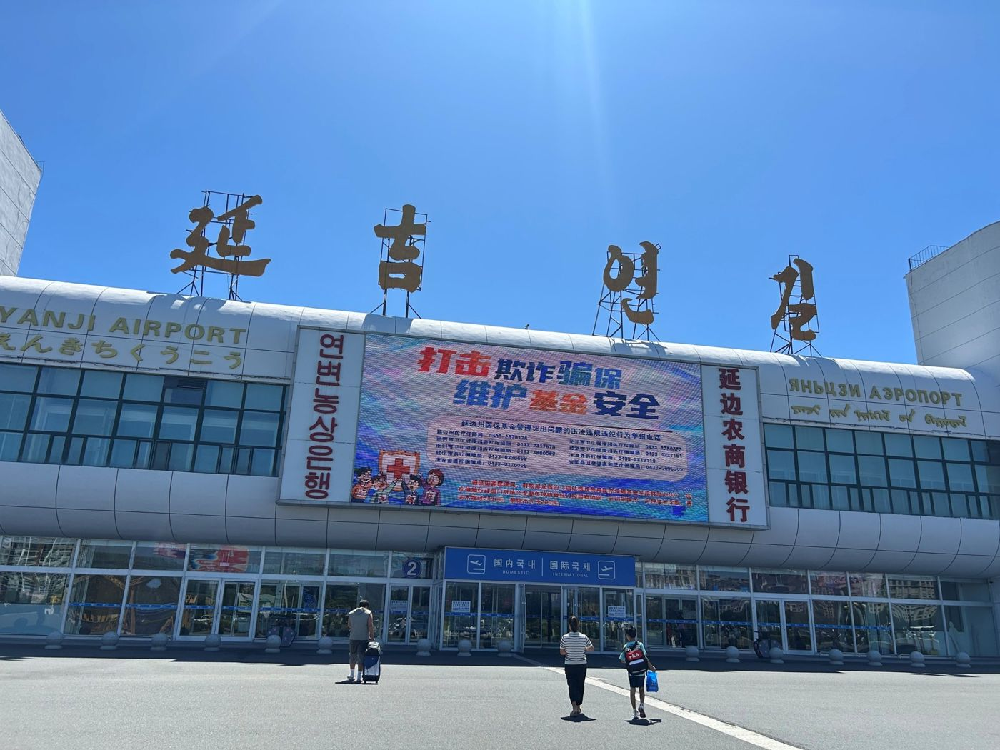
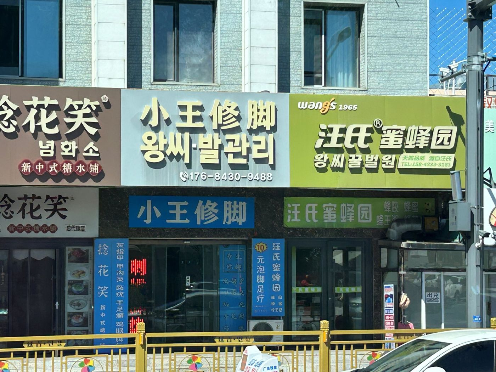
연길은 한국과 닮은 듯 다른 도시다. 공항에서부터 거리 곳곳까지 한글 간판이 이어지고, 시장에는 김밥과 떡볶이처럼 익숙한 분식들이 놓여 있었다. 연변대학교 앞 왕홍창 거리에서는 한글 간판을 배경으로 사진을 찍는 사람들을 볼 수 있었다. 얼핏 한국의 어느 거리에 와 있는 듯했지만, 그 안에서 마주하는 일상은 내가 알고 있던 한국의 모습과 달랐다. 같은 언어와 문화의 흔적을 공유하면서도 서로 다른 사회 속에서 살아가는 사람들. 연길은 익숙한 풍경이 반드시 익숙한 현실을 의미하지는 않는다는 사실을 보여주는 도시였다.
두 번의 백두산 여정 동안 함께한 조선족 가이드들도 기억에 남는다. 같은 언어를 사용하고 문화적 뿌리를 공유한다는 점에서 친근했지만, 그들이 살아온 환경과 일상에는 내가 경험하지 못한 삶의 모습이 있었다. 그런데 신기하게도 그 차이를 발견할수록 낯섦보다는 동포애가 더 크게 느껴졌다. 서로 다른 삶을 살아왔음에도 어딘가 이어져 있다는 감각이 생각보다 깊은 친밀감으로 다가왔다.
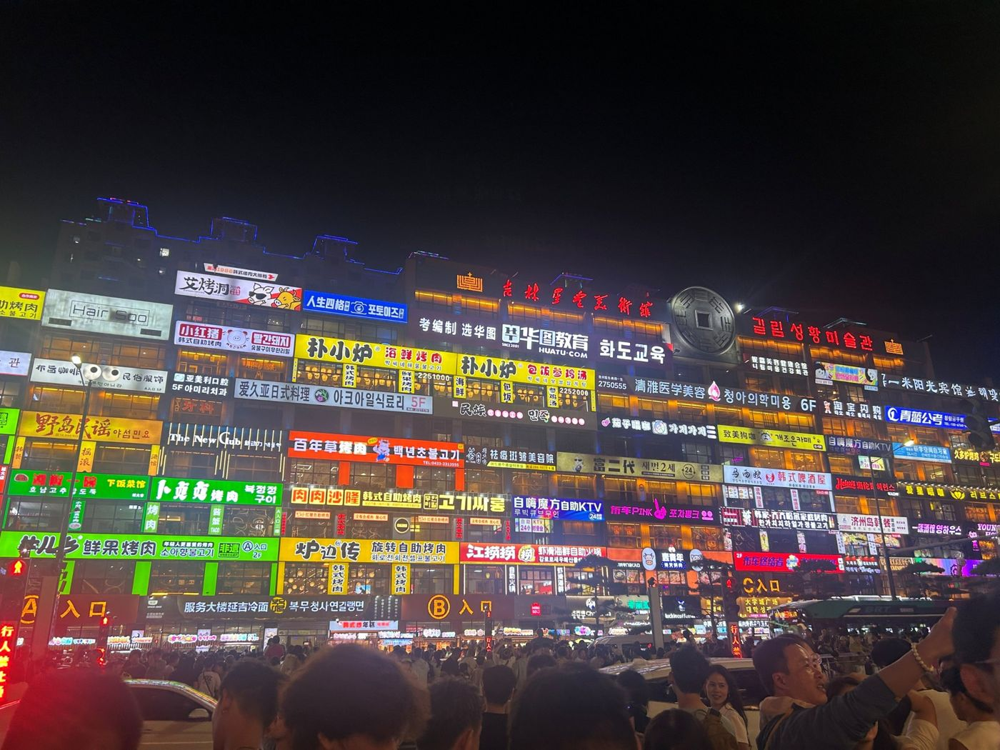
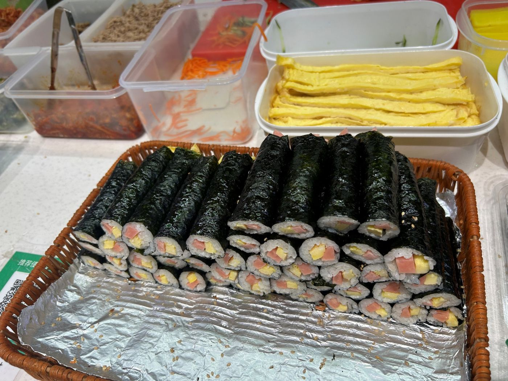
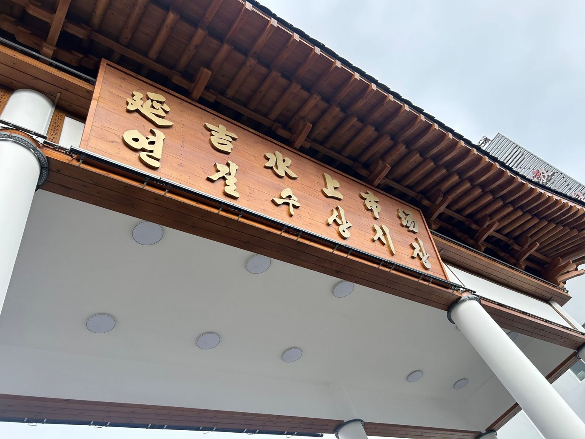
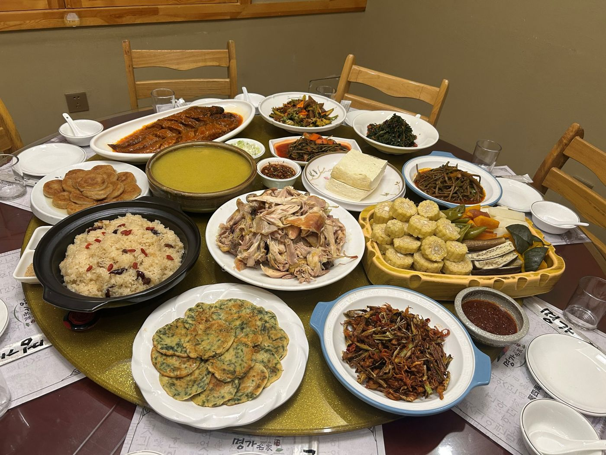
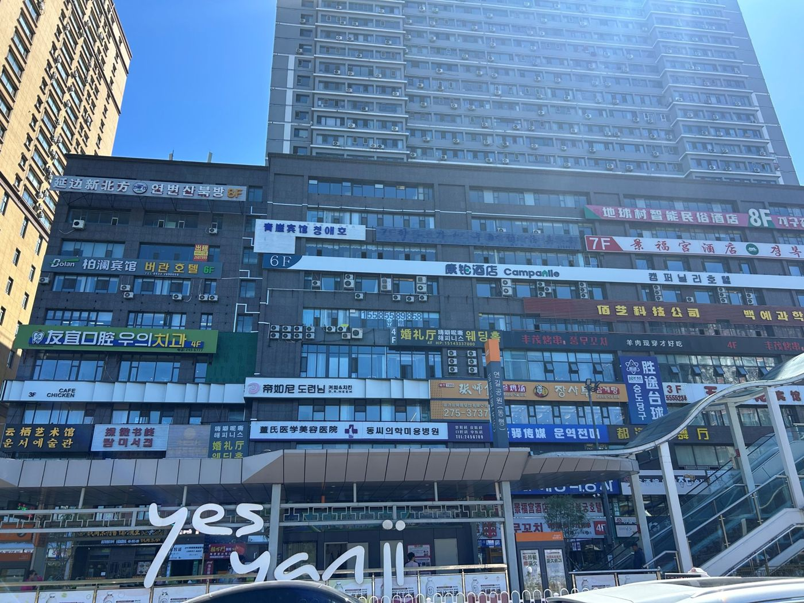
그러다 문득 북한 사람들을 만나면 어떤 기분일지 궁금해졌다. 같은 민족이라는 사실을 머리로 아는 것과 실제로 마주하는 것은 어떻게 다를까. 그런 생각을 하던 중 연길의 한 식당에서 북한 종업원을 만났다. 처음 마주했을 때 나는 설명하기 어려운 직감으로 그가 북한 사람이라는 것을 느꼈다. 무엇 때문이었는지 정확히 설명하기는 어렵지만, 낯선 사람을 만났다는 감각과 함께 같은 민족의 사람을 마주했다는 묘한 친밀감이 들었다.
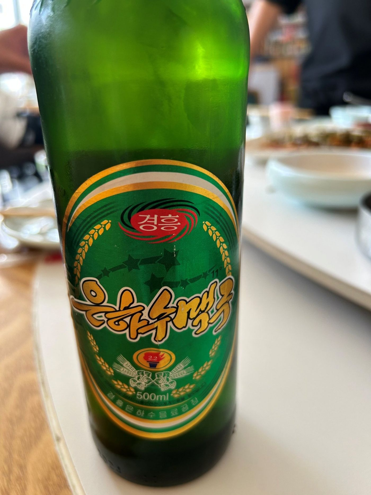
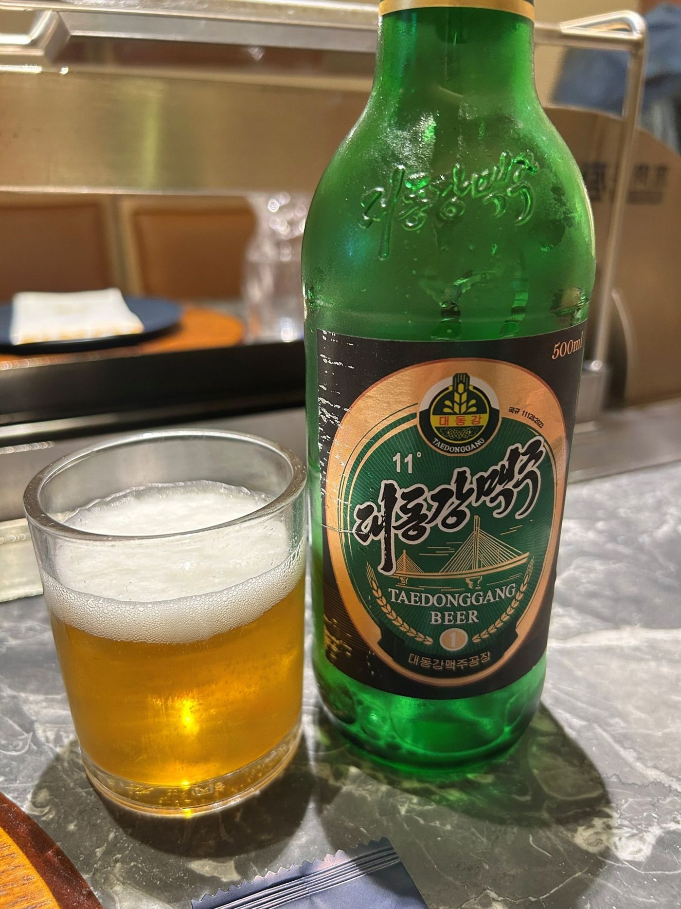
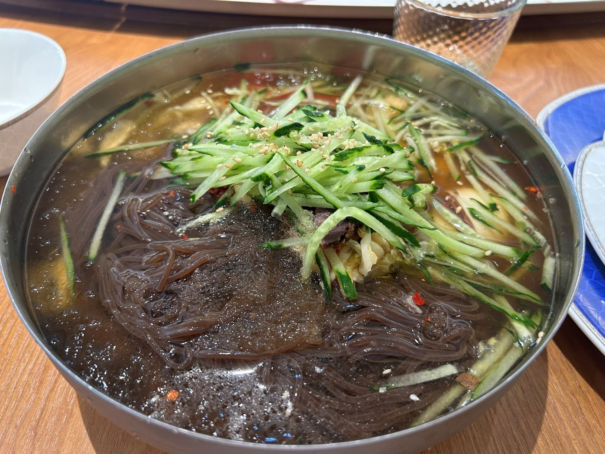
더 마음이 쓰였던 것은 그다음이었다. 북한 종업원은 한국인 손님에게 응대하지 않았다. 나중에 알고 보니 한국인과 접촉하지 못하도록 제한받는다고 했다. 그 사실을 알고 나니 마음이 무거워졌다. 같은 언어를 쓰고 같은 뿌리를 가진 사람들인데, 서로 마주하고 말을 건네는 일조차 자유롭지 않다는 현실이 안타까웠다. 뉴스나 책 속에서 멀게만 느껴졌던 분단의 현실이 눈앞의 한 사람을 통해 구체적으로 다가왔다. 동포라는 친밀감을 느끼는 순간에도 그 마음을 자유롭게 표현할 수 없는 벽이 존재한다는 사실이 유난히 아프게 다가왔다. 그렇게 여러 생각을 안고 백두산으로 향했다.
천지는 날씨가 좋지 않으면 모습을 드러내지 않는다고 했다. 백두산으로 향하는 날에는 유난히 날씨가 걱정됐지만, 다행히 내가 오른 날은 날씨가 좋았다. 우리가 선택한 북파 코스는 버스를 이용해 이동할 수 있어 천지 가까이 다가가는 수고를 덜 수 있었다. 전망대 주변에는 천지를 보기 위해 모여든 관광객들이 빼곡하게 서 있었다. 그렇게 많은 사람이 모여 있었지만, 막상 천지를 마주한 순간 가장 먼저 느껴진 것은 고요함이었다. 눈앞에 펼쳐진 풍경은 웅장하면서도 맑았고, 쉽게 다가설 수 없는 품격과 고고함을 품고 있었다. 그저 아름답다는 말로는 충분하지 않았다. 천지는 고요했지만 강렬했고, 말로 설명하기 어려운 힘이 느껴지는 곳이었다.
천지 너머에는 북한과 맞닿은 땅이 있었다. 같은 산과 호수를 바라보면서도 서로 다른 국경 안에 놓인 현실. 연길에서 만난 조선족 가이드들과 북한 종업원을 떠올리자, 백두산은 단순한 관광지가 아니라 우리 민족의 역사와 현재가 겹쳐 있는 장소로 다가왔다.
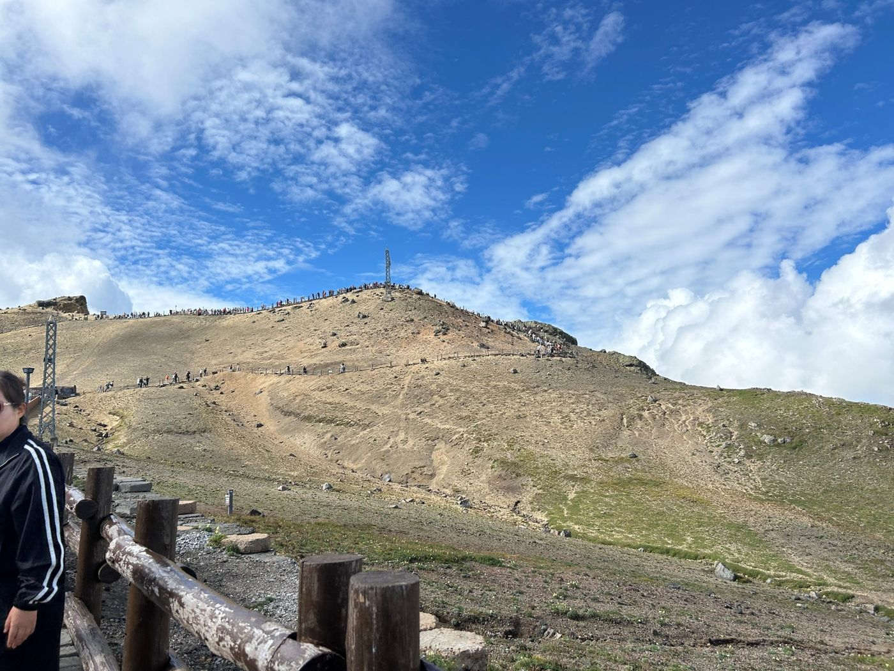
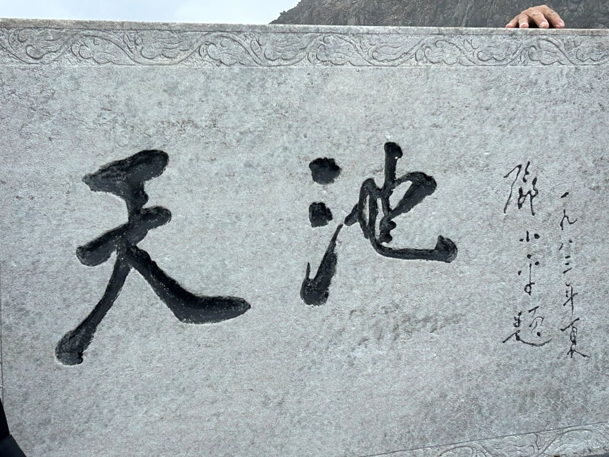
'동해 물과 백두산이 마르고 닳도록.' 천지를 바라보며 다시 애국가의 첫 소절을 떠올렸다. 우리는 왜 수많은 산 가운데 백두산을 노래했을까. 백두산은 우리 민족의 기원과 역사를 품은 산이다. 나라를 잃었던 시절의 기억과 독립을 향한 염원, 분단된 현실 속에서도 하나로 이어지기를 바라는 마음까지 오랜 세월 이 산에 쌓여 왔다. 국경은 산을 나누었지만, 그 산에 담긴 역사와 기억까지 나눌 수는 없었다. 백두산이 우리 민족의 영산일 수밖에 없는 이유도 여기에 있을 것이다.
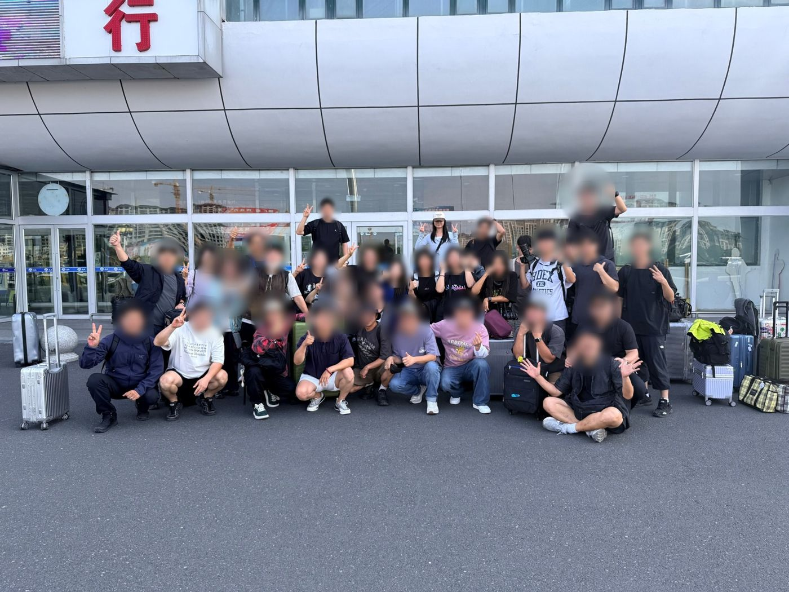
처음 천지를 마주했을 때의 감동은 오래도록 기억에 남았다. 두 번째로 천지를 보러 가는 날에는 이미 한 번 보았는데도 같은 감동을 느낄 수 있을까 싶었다. 하지만 다시 마주한 천지는 여전히 웅장했고, 그 안에는 말로 다 설명할 수 없는 고요함이 있었다. 천지를 바라보는 순간 가슴이 뜨거워졌고, 이내 먹먹해졌다. 그 감동은 나 혼자만의 것이 아니었다. 함께한 독박즈와 제작진 모두 천지 앞에서 비슷한 감정을 나눴다. 두 번이나 천지를 볼 수 있었다는 행운도 감사했지만, 그 벅찬 순간을 함께한 사람들과 나눌 수 있었다는 사실 또한 특별하게 남았다.
익숙하다고 생각했던 장소와 사람들을 직접 마주하고 나서야, 나는 그 안에 미처 알지 못했던 낯선 의미들이 있음을 알게 됐다. 백두산으로 가는 길은 그렇게 익숙한 것들을 새롭게 바라보게 한 여정으로 남았다.
'제2의 심장'을 깨우는 종아리 근육 펌프 운동 세 가지 — 앉아서도, 서서도
심장은 피를 온몸으로 내보내는 데는 힘이 세지만, 다리 끝까지 내려간 피를 다시 끌어올리는 일은 혼자 하지 못한다. 서 있을 때 발끝에서 심장까지는 1미터가 넘는 오르막이다. 이 오르막을 피가 거슬러 올라오도록 돕는 것이 종아리 근육이다. 그래서 종아리를 '제2의 심장'이라고 부른다.
원리는 단순하다. 종아리 근육이 수축하면 그 안을 지나는 깊은 정맥이 눌리고, 눌린 정맥 속 피는 심장 쪽으로 밀려 올라간다. 정맥 안에는 한 방향으로만 열리는 판막이 있어서, 근육이 다시 풀려도 피가 아래로 되돌아 흐르지 않는다. 근육의 수축과 판막의 작동이 번갈아 일어나며 피를 한 칸씩 위로 보내는 이 구조를 '종아리 근육 펌프'라고 한다(Cleveland Clinic).
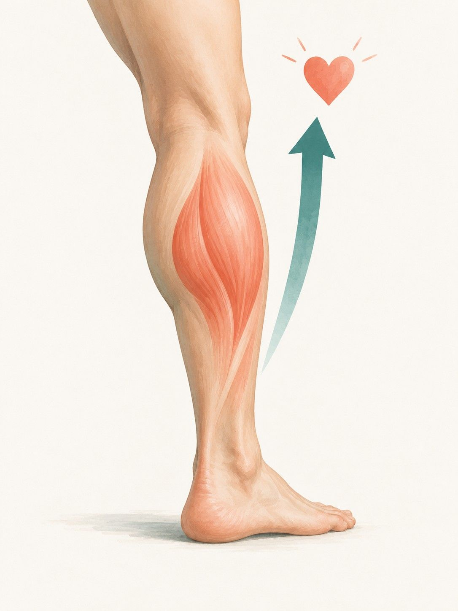
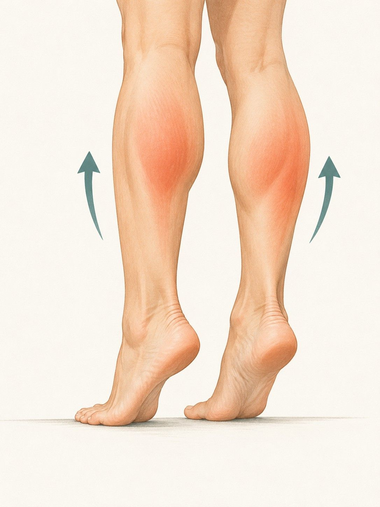
이 펌프는 저절로 돌지 않는다. 종아리가 움직여야 돈다. 오래 앉아 있거나 움직임 없이 서 있으면 종아리 근육이 쓰이지 않고, 다리의 정맥혈은 위로 돌아가기 어려워진다. 저녁이면 다리가 무겁고 발목이 붓는 느낌, 긴 회의나 장거리 이동 뒤에 신발이 꽉 끼는 느낌은 대개 여기서 온다. 영국 국민보건서비스(NHS)가 오래 앉아 있는 사람에게 틈틈이 발목을 움직이고 일어나 걷기를 권하는 이유도 같다.
다행히 펌프를 다시 돌리는 데 특별한 장비는 필요 없다. 뒤꿈치를 들었다 내리는 것만으로 종아리는 수축하고, 피는 위로 움직인다. 만성 정맥부전 환자를 대상으로 한 연구에서는 종아리 근육을 단련하는 운동 프로그램이 근육 펌프의 기능을 끌어올렸다는 보고도 있다(Padberg 외, 2004). 건강한 사람이라면 더 작은 노력으로도 충분하다.
아래 세 가지 동작은 책상 앞에서, 의자에 앉은 채로, 바닥에 다리를 뻗고 할 수 있다. 모두 통증이 없는 범위에서 10회부터 시작하고, 익숙해지면 횟수를 늘린다. 숨은 참지 않는다.
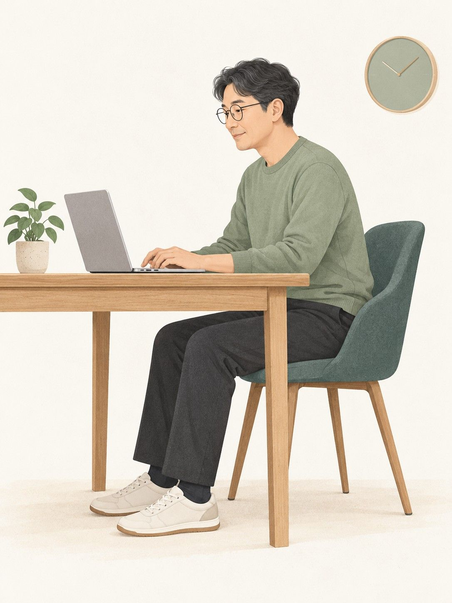
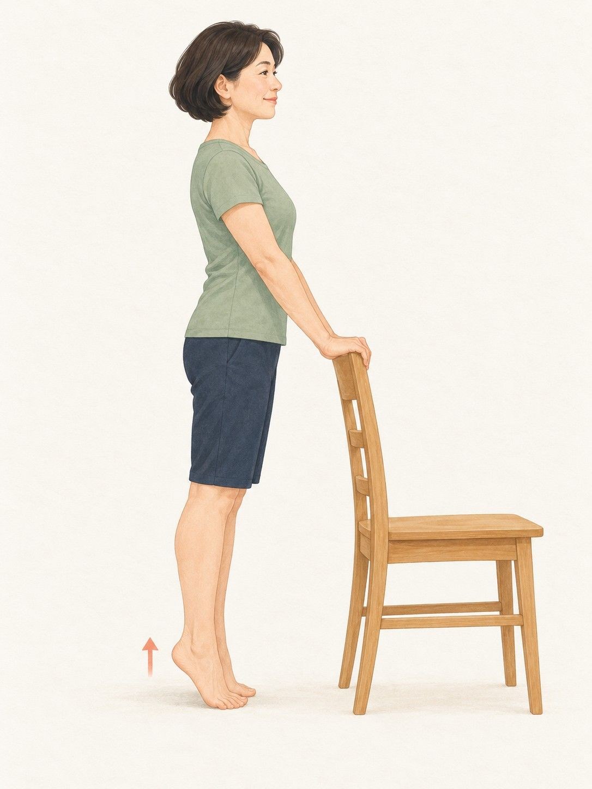
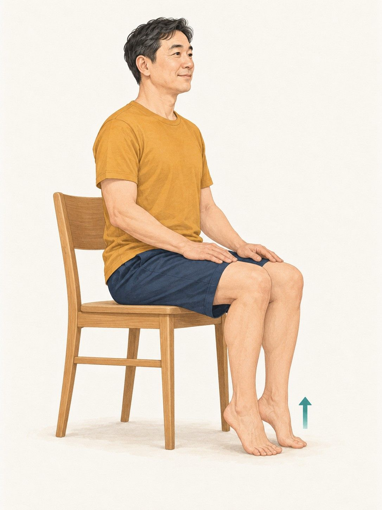
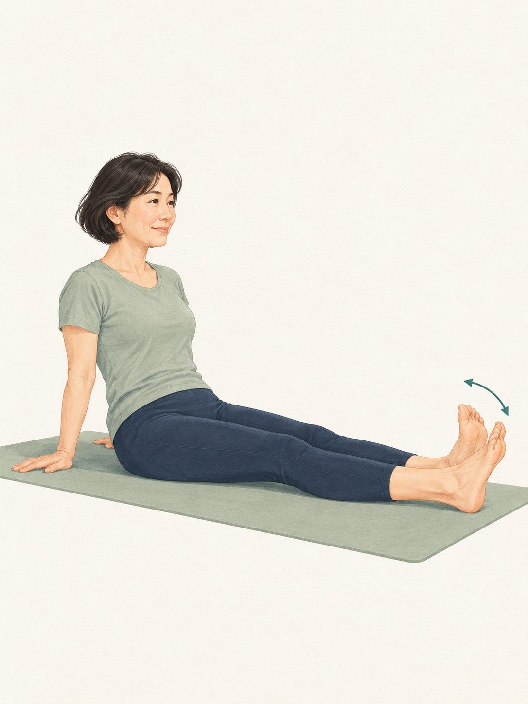
가장 좋은 종아리 운동은 결국 걷기다. 한 걸음마다 뒤꿈치가 땅에 닿고 앞꿈치로 밀어 나가는 동안 종아리는 수축과 이완을 반복한다. 운동 시간을 따로 내지 못하는 날에도, 오래 앉아 있다면 한 시간마다 한 번은 일어나 잠깐 걷는 것이 펌프를 돌리는 가장 쉬운 방법이다. 물을 뜨러 가고, 창가까지 다녀오고, 전화는 서서 받는다. 작은 움직임이 쌓이면 다리는 저녁에도 가볍다.
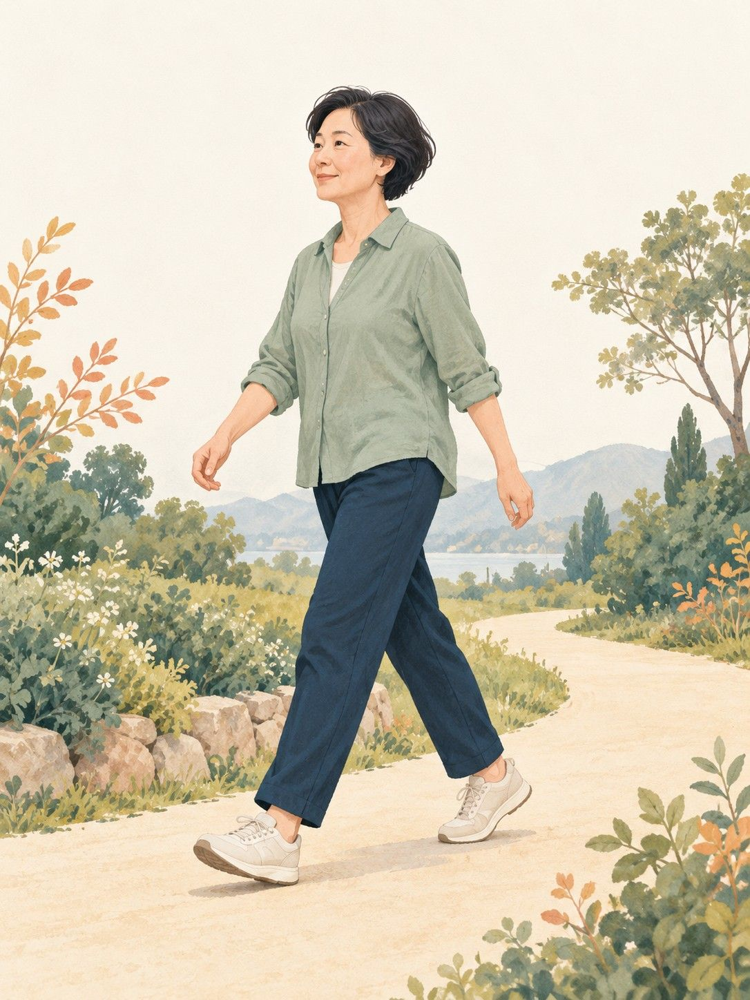
참고 · Cleveland Clinic. Calf muscle pump / Veins(환자 안내). · National Health Service (NHS, UK). 운동과 정맥순환에 관한 안내. · Padberg FT Jr, Johnston MV, Sisto SA. Structured exercise improves calf muscle pump function in chronic venous insufficiency: a randomized trial. Journal of Vascular Surgery 39(1): 79–87, 2004 (PMID 14718821).
여의도 63빌딩 옆에 새 미술관이 문을 열었다. 퐁피두센터 한화. 개관전은 파리 퐁피두센터 소장품으로 꾸린 큐비즘 전시였고, 7월 말 한여름에 다녀왔다. 전시는 10월 4일로 끝났지만, 이 글은 폐막 회고가 아니라 다음 전시를 기다리는 사람을 위한 안내서로 읽어 주시면 좋겠다. 이 미술관이 앞으로 무엇을 보여 줄지, 첫 전시가 이미 많이 말해 주었기 때문이다.
전시는 시간순이다. 피카소와 브라크가 세잔의 뒤를 이어 형태를 쪼개기 시작한 1907–08년에서 출발해, 분석적 큐비즘(1909–11), 살롱 큐비즘(1910–13), 오르픽 큐비즘(1912–14), 종합적 큐비즘(1912–14), 국경을 넘은 큐비즘(1912–14), 전쟁기(1914–18), 그리고 1920년대의 '양식이 된 큐비즘'(1918–27)까지 여덟 장으로 이어진다. 43명 작가의 91점, 파리에서 온 그림들이다.
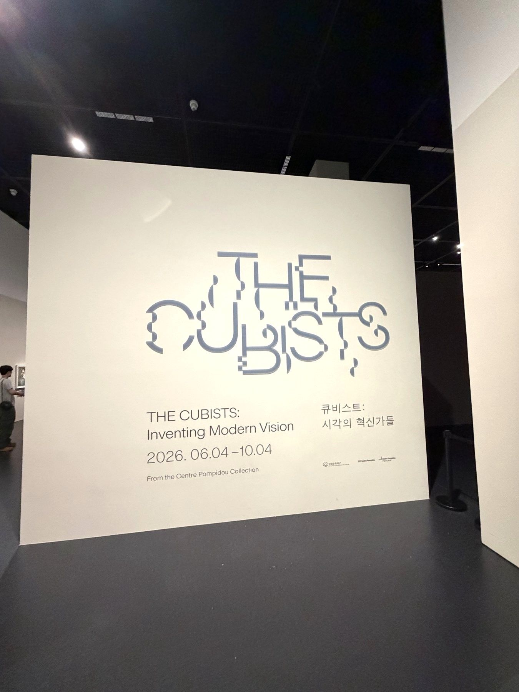
벽에 큰 글씨로 적힌 인용문이 길잡이 노릇을 한다. 오르픽 큐비즘 방에는 아폴리네르의 1913년 문장이 있다. "그것은 시각적 현실에서 빌려온 요소들이 아니라, 예술가가 전적으로 창조하고 강력한 현실성을 부여한 요소들로 새로운 총체를 그려내는 예술이다. (…) 예술 그 자체(de l'art pur)인 것이다." 이 방에 소니아 들로네의 「전기 프리즘(동시의 색채)」(1914)과 피카비아의 「우드니」(1913)가 걸려 있다. 들로네의 원들은 파리에 처음 들어온 전기 가로등의 빛을 그린 것이라고 설명판은 적는다. 백 년 전 사람들이 밤거리의 새 빛 앞에서 느낀 어지러움이 캔버스 위에 그대로 남아 있다.
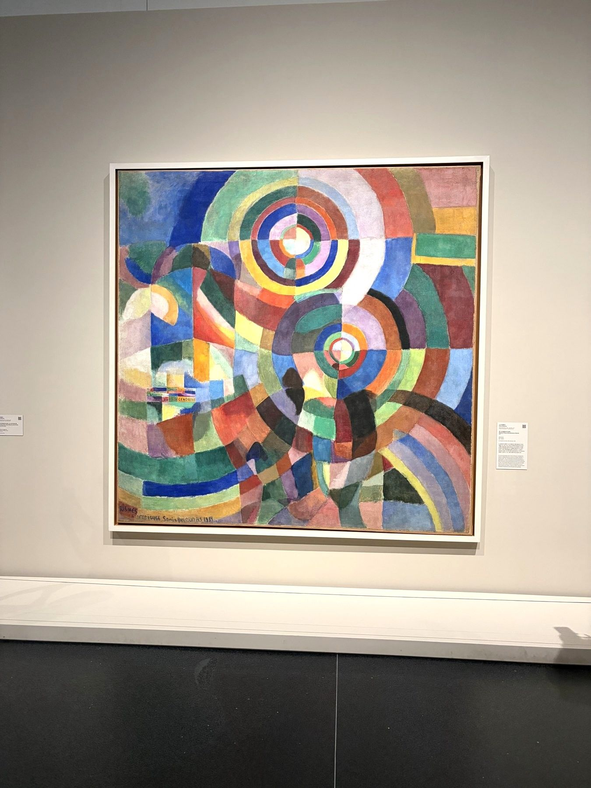
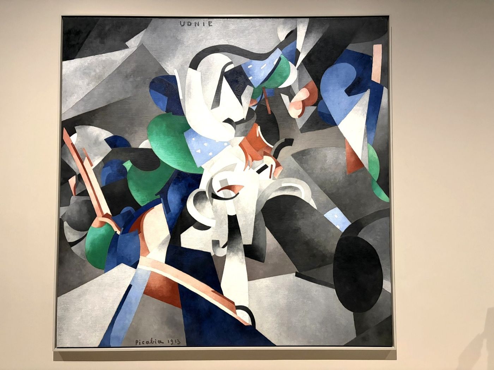
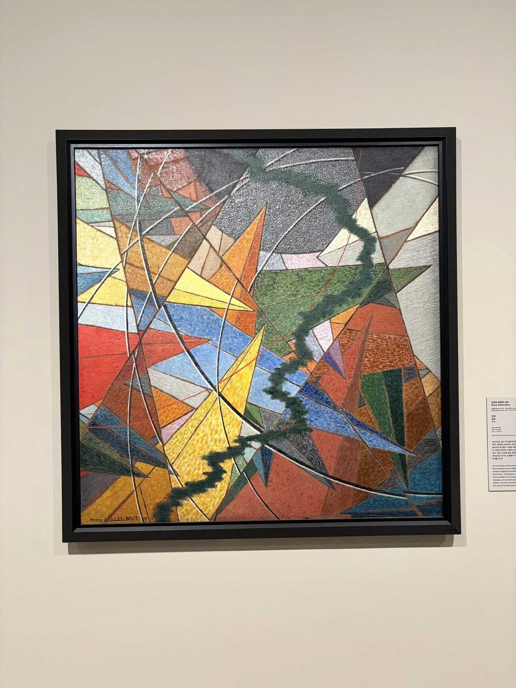
전쟁기 방은 이 전시에서 가장 조용한 방이다. 알베르 글레이즈의 「전쟁의 노래(플로랑 슈미트의 초상)」(1915)는 군악대를 지휘하는 작곡가를, 피에르 알베르-비로의 「전쟁」(1916)은 폭발하는 색의 삼각형들을 그렸다. 장 푸니의 「이발사」(1915)는 러시아에서 온 그림이다. 큐비즘이 파리를 떠나 모스크바와 뉴욕으로 번져 가던 시기, 그림 안에 러시아어 신문 조각이 붙어 있다.
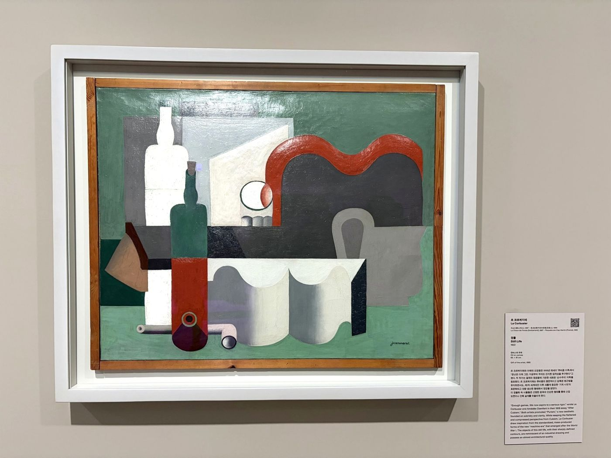
그리고 1920년대. 메챙제의 「뜨개질하는 여인」(1919), 후안 그리스의 「투렌 지방 사람」(1918년 9월), 레제의 「허브차 주전자」(1918년 4월), 브라크의 「기타와 유리잔」(1921), 르 코르뷔지에의 「정물」(1922), 조르주 발미에의 「구성」(1926). 쪼개진 형태들이 다시 단정하게 모이고, 건축가가 그린 정물은 설계도처럼 반듯하다. 혁명이 양식이 되는 과정을 한 방에서 본다.
그런데 내가 가장 오래 서 있었던 것은 액자 속 그림이 아니라, 벽 하나를 다 차지한 천이었다. 피카소가 1924년 '파리의 밤(Soirées de Paris)' 발레 공연을 위해 그린 무대막. 기타를 든 아를르캥과 바이올린을 켜는 피에로가 붓 몇 번으로 그려져 있다. 큐비즘의 창시자가 큐비즘을 다 지나온 뒤에 그린, 거의 선 하나로 된 그림이다.
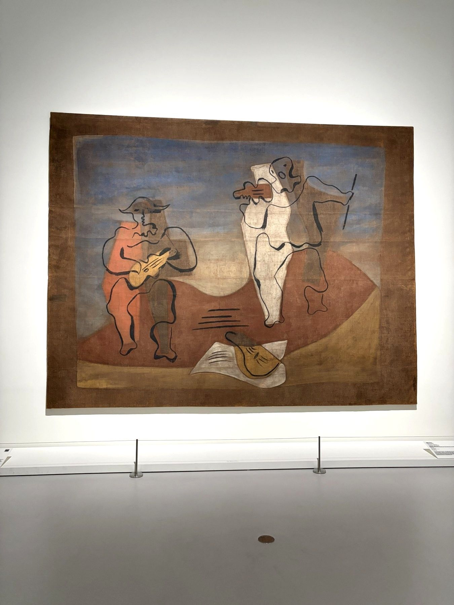
솔직히 처음 든 생각은 이것이었다. 거장 피카소가 이런 작업을 했던 때도 있구나. 형태를 쪼개고 또 쪼개던 사람이, 무대 뒤에 걸릴 천 위에 붓을 몇 번 긋고 손을 뗐다. 앞의 일곱 방을 다 지나온 뒤에 보니, 이 가벼운 선은 큐비즘을 몰라서 가벼운 것이 아니라 다 알고 난 뒤에야 나올 수 있는 선이었다. 어디서 멈출지 미리 아는 손만이 이렇게 느슨하게 그린다. 세게 쥐지 않은 선이 가장 오래 남는다는 것을, 그 앞에서 손으로 알았다. 그래서 오래 서 있었다.
2층으로 오르는 계단은 좁고 하얗다. 한 줄 빛이 난간을 따라 올라간다. 그 끝에 벽 하나가 기다린다. 여기서부터는 한국이다. 큐비즘이 한국 근현대미술에 남긴 흔적을 모은 특별 세션, 11명의 21점. 이수억의 「6·25동란」(1954)은 피난 수레를 끄는 사람들을 각진 덩어리로 그렸고, 구본웅과 김환기, 유영국의 그림이 그 뒤를 잇는다. 파리의 1910년대가 서울의 1930년대와 1950년대에 어떻게 도착했는지를, 그림 자체가 보여 준다.
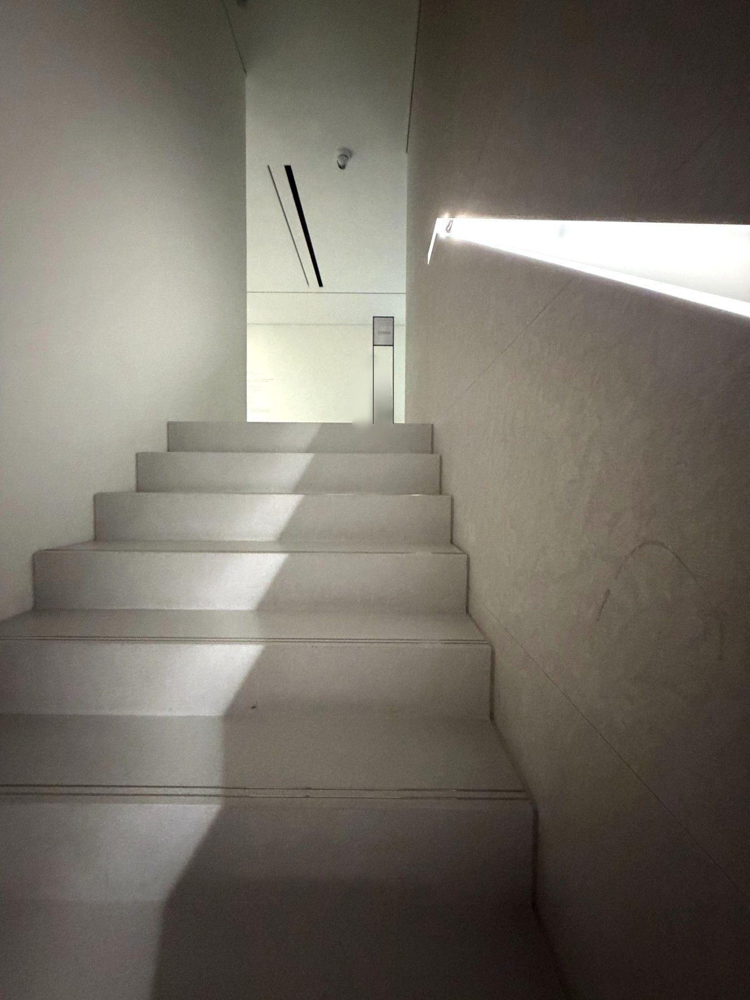
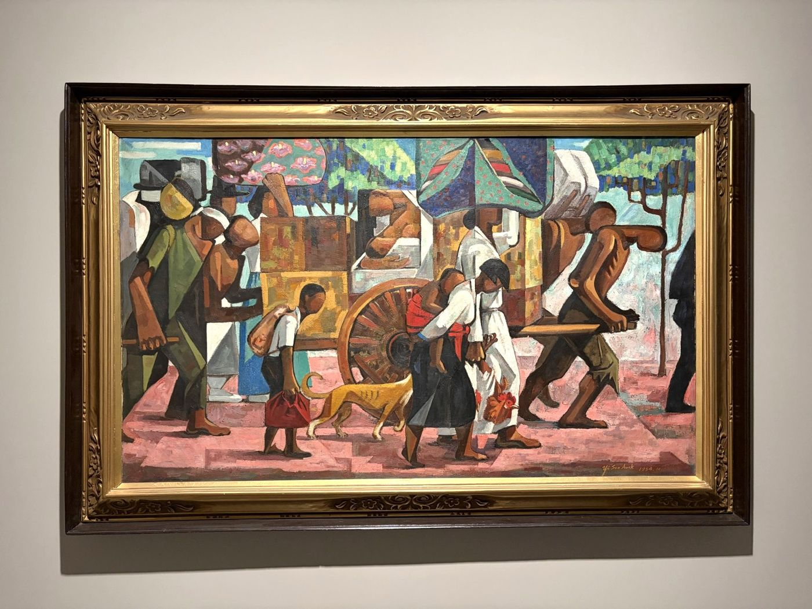
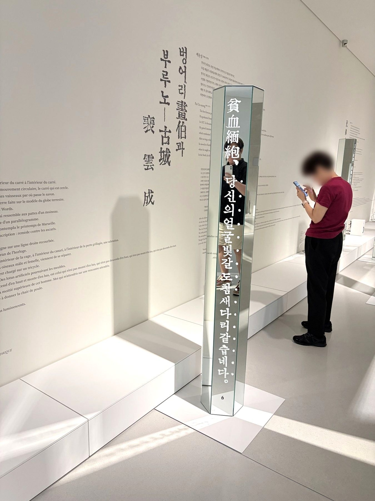
이 전시의 가장 뜻밖의 방은 그림이 없는 방이다. 어두운 방에 거울 기둥들이 서 있고, 기둥마다 1930년대 한국 문인들의 문장이 세로로 흘러내린다. 이상(李箱)의 「건축무한육면각체 — AU MAGASIN DE NOUVEAUTES」, 배운성의 「벙어리 畵伯과 부루노—古城」, 최승희의 「兄弟에게 보내는 글」. 스피커에서 낭독이 흘러나온다. 벽에는 한 문장이 있다. "말은 말을 낳고, 문장은 다른 문장의 방이 된다." 큐비즘이 그림의 문법을 바꾼 것처럼, 같은 시대 경성의 시인들은 문장의 문법을 바꾸고 있었다는 이야기다. 바로 앞 방 벽에는 구본웅과 김환기의 글이 빛으로 흐른다. "회화는 더 이상 거울이 아니요, 정신의 구성물이다." 그 옆에 그 말을 쓴 사람의 그림이 걸려 있으니, 글과 그림이 서로를 설명한다.
거울 기둥 앞에 서면 이상의 시 사이로 내 얼굴이 비친다. 1930년대 경성의 시인이 쓴 문장과 2026년 여의도의 관람객이 한 기둥 안에 겹친다. 지난 호 끝에 '예술은 누구의 것인가'라고 물었는데, 이 방이 답의 절반을 준다. 파리의 그림이 서울에 와서 걸리는 것만으로는 아직 누구의 것도 아니다. 그 그림을 보고 자기 문장을 바꾼 사람이 생길 때, 그때 비로소 그 시대의 것이 된다. 이상이 그랬고, 구본웅이 그랬다.
건물은 '빛의 상자'다. 낮에는 빛이 안으로 스미고 밤에는 밖으로 번진다는 설명인데, 반투명 유리 외벽의 곡선은 기와에서 따왔다고 한다. 2층 난간에서 내려다보면 1층 전시장이 한눈에 들어온다. 그 자리가 이 미술관에서 가장 좋은 자리였다.
큐비스트 전시는 끝났다. 다음은 샤갈이다. 11월 24일 개막 예정이고, 그 뒤로 칸딘스키와 마티스가 차례로 온다고 한다. 여의도에 갈 일이 있다면, 63빌딩을 올려다보지 말고 그 옆의 낮은 빛 상자를 먼저 보시기를.
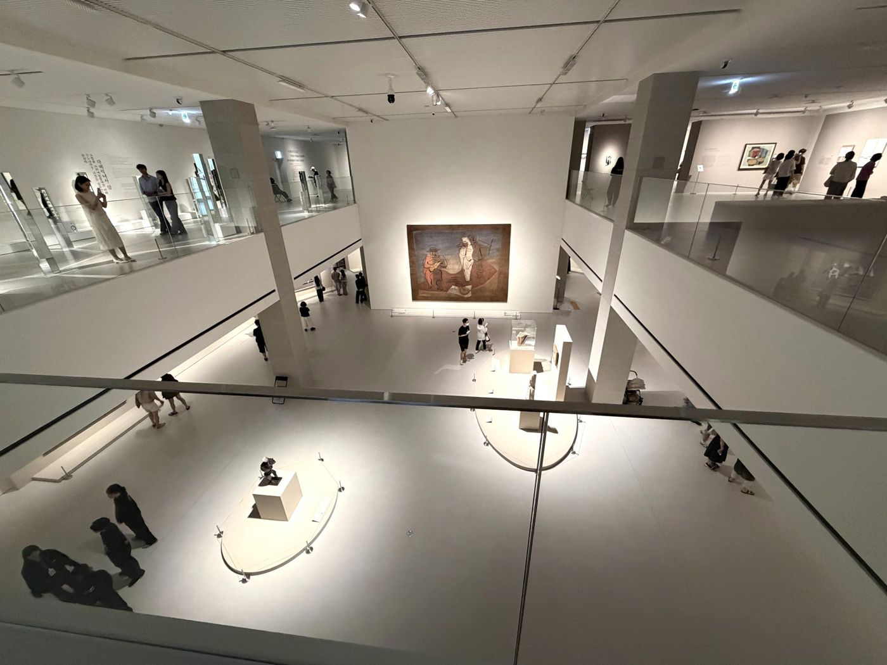
이 연재는 석 달 동안 악보 속에 숨은 이름을 찾아 다녔다. 바흐는 자기 이름 네 글자를 네 개의 음으로 바꿔 푸가의 마지막 주제로 삼았고, 슈만은 연인의 고향을, 브람스는 떠나보낸 여인의 이름을 음표 사이에 끼워 넣었다. 쇼스타코비치는 검열관이 읽을 수 없는 네 음으로 자기 서명을 남겼고, 베르크는 50년 동안 열리지 않을 편지를 악보에 봉했다. 모두 이름을 숨긴 사람들이다. 이름이 들키면 안 되거나, 들키지 않는 편이 아름다웠기 때문이다.
이번 회는 반대 방향의 이야기다. 이름을 숨기지 않고, 평생을 들여 음악 위에 서명한 사람. 그 서명이 올해 여름에야 음반이 되었다.
앤서니 홉킨스는 1937년 12월 마지막 날 웨일스 남부의 제철 도시 포트탤벗에서 태어났다. 아버지는 빵집을 했다. 아이는 네 살에 피아노를 시작했고, 몇 해 지나지 않아 베토벤과 쇼팽을 쳤으며, 여섯 살 무렵부터는 악보를 벗어나 제멋대로 치기 시작했다. 1950년대 십 대에는 동네 연극 무대에 올릴 곡을 썼다. 배우가 되기 전에 그는 먼저 작곡하는 아이였다. 훗날 그는 이렇게 말했다. "음악이 내 첫 번째 욕망이었고, 첫 번째 소원이었다."
소원은 이루어지지 않았다. 적어도 그때는. 열일곱 살의 홉킨스가 간 곳은 음악원이 아니라 카디프의 연극학교였고, 그 뒤로 런던 왕립연극학교, 리버풀 플레이하우스, 로런스 올리비에의 국립극장으로 이어지는 길은 세상이 아는 그 길이다. 햄릿과 리어, 그리고 한니발 렉터. 음악은 그 길의 가장자리에 남았다.
가장자리에 남았다는 말은 사라졌다는 말이 아니다. 1963년 리버풀 플레이하우스의 젊은 배우는 리허설 전 무대 뒤 업라이트 피아노 앞에 앉아 있곤 했다. 그때 손끝에서 나온 선율 하나가 있었다. 어린 시절 집 주변의 거리와 들판, 농장과 산을 떠올리게 하는 블루스 섞인 노래. 그는 그 곡에 자기 집 앞길의 이름을 붙였다. 「브래큰 로드」.
이듬해인 1964년에는 왈츠 한 곡을 썼다. 그 악보는 서랍에서 47년을 기다렸다. 서랍을 연 사람은 그가 아니었다. 아내 스텔라 아로야베가 남편 몰래 그 악보를 앙드레 류에게 보냈다. 류는 피아노 악보를 오케스트라로 편곡해 연습한 뒤 로스앤젤레스의 홉킨스에게 전화를 걸었다. 방금 당신의 왈츠를 연습했고, 무대에서 연주하고 싶다고. 홉킨스가 아내에게 한 말은 이것이었다. "그 왈츠를 빈에서 들을 수 있다면 좋겠는데."
2011년 여름, 빈. 요한 슈트라우스 오케스트라가 「그리고 왈츠는 계속된다」를 처음 연주했을 때 로스앤젤레스에서 날아온 일흔세 살의 작곡가는 객석에 있었다. 연주가 끝나고 그가 한 말은 길지 않았다. "너무 좋다, 너무 좋아. 눈물이 난다." 류는 그날을 "우리 둘 모두에게 꿈 같았다"고 했다. 그 왈츠는 그해 가을 류의 음반 표제곡이 되어 영국 클래식 차트 1위에 올랐고, 이듬해 홉킨스는 「컴포저」라는 제목의 첫 음반을 냈다. 그러나 그것은 아직 "배우 앤서니 홉킨스가 작곡도 한다"는 기사의 소재였다.
들어 보기 — 「그리고 왈츠는 계속된다」휴대전화 카메라로 QR을 비추면 유튜브로 연결돼요
1964년의 왈츠를 앙드레 류와 요한 슈트라우스 오케스트라가 연주한다. 객석의 홉킨스가 모자를 벗어 오케스트라에 인사하는 장면이 담겼다. QR: 2012 마스트리흐트 실황 · 앙드레 류 공식 채널
「그리고 왈츠는 계속된다」 — 앙드레 류·요한 슈트라우스 오케스트라, 2012 마스트리흐트 실황(홉킨스 객석)
올해 데카 클래식스가 그를 작곡가로 계약했다. 배우로서가 아니라 작곡가로서. 음반 제목은 「인생은 꿈」. 구스타보 두다멜이 필하모니아 오케스트라를 지휘했고, 피아노 세르히오 티엠포, 첼로 그레고리오 니에토, 바흐 합창단과 윈체스터 대성당 소년성가대가 함께했다. 녹음은 4월 런던 알렉산드라 팰리스에서 했고, 음반은 8월 21일에 나왔다. 그의 나이 여든여덟.
열두 곡은 60년에 걸쳐 쓴 것들이다. 1963년의 「브래큰 로드」는 피아노와 오케스트라를 위한 모음곡 「1947」의 2악장이 되었다. 1947년은 그가 아홉 살이던 해다. 「마이 페이더랜드」는 웨일스 민요에서 왔고, 그는 이 곡을 두고 "나는 내 아버지, 빵 굽는 사람의 아들"이라고 적었다. 「스텔라 아리아」는 아내를 위해, 「타라」는 조카를 위해 썼다. 그리고 2011년 빈에서 그를 울린 왈츠가 세 번째 트랙으로 들어갔다. 두다멜은 그를 "어느 한 매체로 가둘 수 없는 창작의 목소리"라고 했고, 홉킨스는 짧게 말했다. "내 인생 전부가 꿈이다. 데카와의 계약은 평생의 영광이다."
구스타보 두다멜 지휘, 필하모니아 오케스트라 · 피아노 세르히오 티엠포 · 첼로 그레고리오 니에토 · 바흐 합창단, 윈체스터 대성당 소년성가대 · 2026년 4월 런던 알렉산드라 팰리스 녹음. LP는 10월 30일 발매.
이 연재의 작곡가들은 이름을 음표 안에 접어 넣었다. 홉킨스는 그렇게 하지 않았다. 그는 이름을 숨길 필요가 없었고, 숨길 수도 없었다. 그의 이름은 이미 세상에서 가장 알려진 이름 가운데 하나였으니까. 그가 한 일은 다른 것이다. 그 이름으로 영화에 서명하는 대신, 여든여덟 해를 들여 음악 자체에 서명했다. 바흐가 네 음으로 한 일을 그는 60년으로 했다.
그래서 이 음반은 유명 배우의 외도가 아니다. 네 살에 시작한 소원이 자기 차례를 기다린 기록이다. 그는 평생 그 소원을 손에서 놓지 않았지만 움켜쥐지도 않았다. 분장실 피아노에서, 서랍 속 왈츠에서, 그것은 느슨하게 쥔 채로 60년을 살아남았다. 이번 호 편집장 왈의 말을 빌리면, 너무 세게 붙잡았다면 부서졌을 것이다.
규칙 A~G는 그대로, B=시♭ · H=시 · S(Es)=미♭ · As=라♭ · 나머지 철자는 건너뛴다
들어 보기 — 「1947」 2악장 「브래큰 로드」
1963년 리버풀 분장실에서 시작된 선율. 현과 약음기 낀 트럼펫, 클라리넷, 피아노 독주. 엘가 교향곡 1번 느린 악장에 바치는 편곡이다. QR: 두다멜·필하모니아 오케스트라, 피아노 세르히오 티엠포 · 데카 공식 음원
「1947」 2악장 「브래큰 로드」 — 두다멜·필하모니아 오케스트라 · 데카 공식 음원
참고: Decca Classics·gustavodudamel.com, 「Life Is A Dream」 음반 소개(2026) · Music Week, "Decca Classics signs Sir Anthony Hopkins as a composer"(2026. 7.) · André Rieu 보도자료 "World premiere of waltz composed by Anthony Hopkins"(2011. 7. 5.) · Classic FM, "Sir Anthony Hopkins watches waltz" · The Independent, 홉킨스 인터뷰(2012. 11. 9.) · Official Charts(2012. 1.), Classic BRIT Awards 2012.
엄마의 글씨를 남기기 전에, 먼저 내 손으로 해 본 하루 — 샤프 한 자루, 870자, 그리고 AI
물건을 모으는 사람은 결국 자기 손으로 만든 물건 하나를 갖고 싶어진다. 이번 달 내 방에 들어온 물건은 바퀴가 달린 것도, 잉크가 든 것도 아니다. 파일 여덟 개짜리 폰트다. 이름은 「Jimin Handwriting」. 내 글씨를 내가 쓰고, AI가 활자로 바꿨다. 10월 22일 하루에 벌어진 일이다.
사실은 내 글씨가 아니라 엄마의 글씨를 남기고 싶었다. 나는 엄마의 글씨체를 좋아한다. 그 글씨로 된 폰트가 있으면, 엄마가 쓰지 않은 문장도 엄마의 글씨로 읽을 수 있을 것이다. 그런데 템플릿에 글자를 몇백 자 써 달라고 부탁하기 전에, 그 일이 얼마나 힘든지 내가 먼저 해 봐야 했다. 할 만한 일인지, 아니면 한 시간 만에 손이 아파 오는 일인지. 그래서 내 글씨부터 썼다.
폰트를 만드는 길은 셋이라고 했다. 손글씨를 템플릿에 써서 자동으로 변환하는 길, 벡터 편집기로 글자를 하나하나 그리는 길, 오픈소스 폰트를 고쳐 쓰는 길. 두 번째는 수개월, 세 번째는 내 글씨가 아니다. 첫 번째로 갔다. 웹 서비스도 몇 개 있었다. 무료인 것은 한글이 안 되거나 글자 수 제한이 있었고, 외주는 한글 2,780자 기준 77만 원에 보름이 걸린다고 했다(그날 검색 기준). 그래서 물었다. "네가 직접 만들어 줄래?"
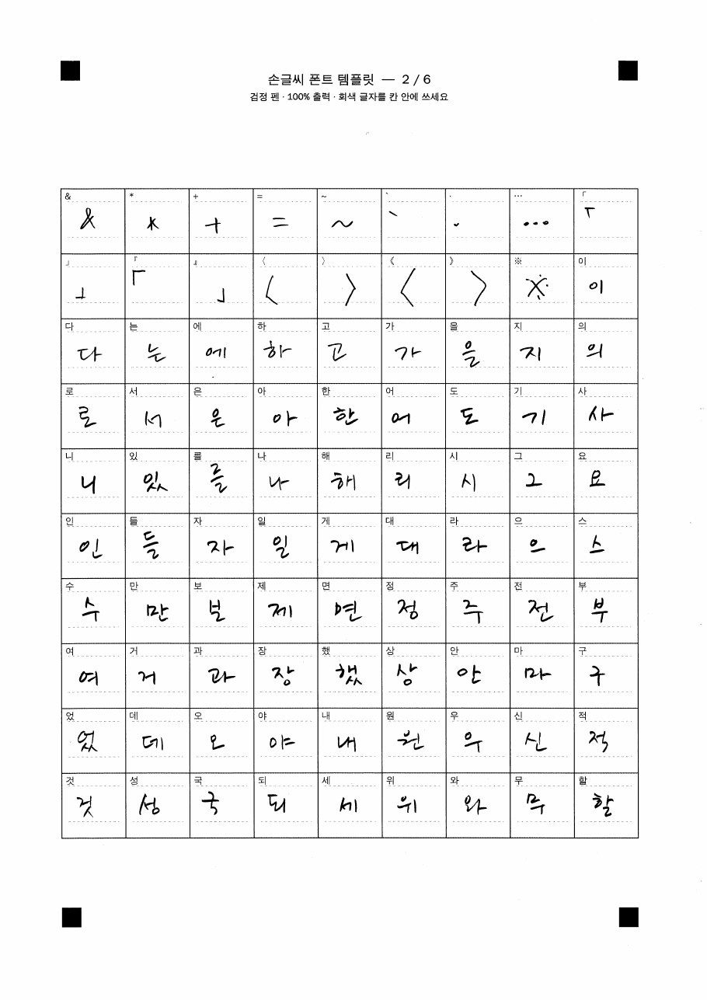
AI가 템플릿을 설계해 왔다. A4 여섯 장, 한 장에 아흔 칸. 칸마다 왼쪽 위에 회색으로 쓸 글자가 적혀 있고, 네 모서리에는 검은 네모가 하나씩 박혀 있다. 스캔할 때 종이가 비뚤어져도 이 네모 네 개로 기울기를 바로잡는다고 했다. 글자는 숫자 10자, 영문 52자, 기호 45자, 그리고 한국어에서 가장 자주 쓰이는 한글 420자. 420자면 보통 글의 90퍼센트 남짓이 덮인다고 했다. 내 이름과 연구소 이름에 들어가는 글자는 빈도와 상관없이 끼워 넣었다.
마침 시험공부 중이라 책상 위에 있던 것은 스테들러 헥사고날 샤프에 2B 심이었다. 안내문에는 검정 펠트펜이나 0.5~0.7밀리미터 중성펜을 쓰라고 적혀 있었지만, 손에 익은 걸로 썼다. 집에서 한 시간쯤. 그리고 결과물에는 샤프 질감이 샤프 질감 그대로 나왔다. 스캔한 PDF를 올리자 527자가 전부 인식됐다. 비어 있는 칸 0개. 몇 분 뒤 TTF 파일이 왔다. 미리보기 문장에서 '논'과 '폰'이 네모(□)로 나왔다. 420자 밖의 글자였다. 글자 크기가 제각각인 것도, 줄이 조금씩 흔들리는 것도 내가 쓴 그대로였다. 폰트는 거짓말을 하지 않는다.
"1, 2, 3 다 시도해 보자." 그렇게 네 가지가 생겼다. 쓴 그대로의 Regular, 획을 양쪽 0.08밀리미터씩 깎은 Light, 0.13밀리미터씩 키운 Bold, 그리고 글자 높이를 고르게 맞춘 Even. Even은 줄이 가지런해지는 대신 손글씨 맛이 조금 줄었다. 나는 Regular가 좋다. 더 인간적이다. 내 글씨의 높낮이가 그대로 느껴지고, 그 높낮이에서 내 성격이 느껴진다.
그리고 템플릿이 다섯 장 더 왔다. 빈도 421위부터 870위까지 450자. "1차와 같은 펜, 같은 크기로 써 주셔야 섞였을 때 티가 안 나요." 같은 샤프로, 그날 안에 썼다. 870자면 일반 텍스트의 97~98퍼센트가 덮인다.
870자로 문장을 쳐 보다가 걸렸다. "다람쥐 헌 쳇바퀴에 타고파." 한글 자판 연습의 그 문장. '쳇'과 '퀴'가 없었다. 870자 안에 들 만큼 자주 쓰는 글자가 아니었던 것이다.
AI가 낸 해법은 이랬다. 내가 쓴 870자를 초성·중성·종성 자리로 잘라 부품 1,900여 개를 만들고, 없는 글자는 가장 비슷한 글자에서 부품 하나만 바꿔 끼운다. 겹받침은 받침 두 개를 반씩 붙였다. 그렇게 완성형 한글 2,350자 가운데 빠져 있던 1,480자 중 1,477자가 생겼다. 실패한 세 글자는 녘·엌·읔. 내가 받침 ㅋ을 한 번도 쓰지 않아서다.
AI는 품질을 두 등급으로 나눠 말했다. 쳇·퀴·넋·흙·닭처럼 부품 교체가 깔끔한 글자는 자연스럽고, 얹·읊·튬처럼 획이 복잡한 글자는 어색하다고. 어색한 글자가 눈에 띄면 그것만 모아 한 장 템플릿으로 다시 쓰면 된다고 했다. 글리프 2,458개 × 4종, 파일 여덟 개. 폰트 이름은 그대로 「Jimin Handwriting」.
이번 호 특집은 인공지능이 일의 입구를 좁히고 있다는 데이터로 시작한다. 그런데 이 물건은 반대 방향에서 만들어졌다. 글자를 쓴 것은 나다. 870번 샤프를 들었다 놓은 것도 나다. AI가 한 일은 종이의 기울기를 바로잡고, 글자를 오려 내고, 윤곽선을 따고, 없는 글자를 내 부품으로 조립한 것이다. 어느 쪽이 '일'을 했는가. 둘 다다. 다만 글씨에 남은 것은 내 손의 버릇이고, 그래서 이 폰트는 내 물건이다.
완성된 폰트로 처음 쓴 문장은 파워포인트에 친 세 줄이었다. "내 손글씨로 글을 써보자. 폰트 만들기 좋다. <공부>하기 싫어서 [노가다]." 시험공부 중인 사람의 문장이다. 그 세 줄이 샤프 질감 그대로 화면에 뜨는 것을 보고, 엄마에게 템플릿을 내밀어도 되겠다고 생각했다. 한 시간이면 된다고, 샤프로 써도 된다고 말해 줄 수 있으니까.
아직 안 한 것이 둘 있다. 맑은 고딕 옆에 놓으면 내 글씨가 15~20퍼센트쯤 작아 보여서 전체 크기를 키워야 한다. 그리고 받침 ㅋ이 들어간 글자 세 개를 써야 한다. 녘, 엌, 읔. 언제 쓸지 모르는 글자지만, 맥시멀리스트는 빈칸을 두지 않는다.
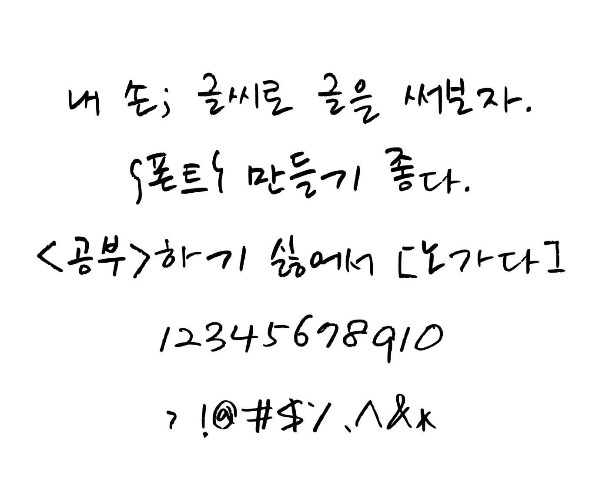
바람이 차가워지는 10월, 이번 달 장바구니에는 흙 묻은 감자 한 봉지가 담겼다. 삶아서 샐러드로, 문어와 함께 볶아 스페인식으로, 채 썰어 부치고, 껍질째 쪼개어 굽는 네 접시의 실험 기록.
재료 감자 2개, 로메인 약간, 베이컨, 삶은 달걀 1~2개 · 드레싱 그릭요거트(마요네즈도 무방) 3T, 홀그레인 머스터드 1T, 화이트 발사믹 2T, 알룰로스, 후추, 올리브오일 약간, 파슬리 가루(생략 가능)
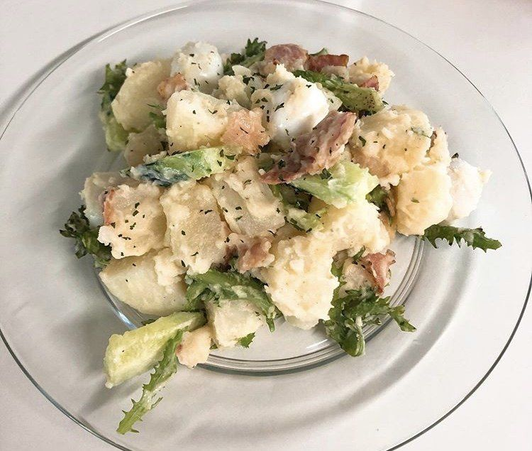
재료 데친 문어 250g, 감자 3개, 올리브 7~8개, 파슬리 약간, 올리브오일, 파프리카 가루 1/2T, 소금·후추·레몬즙 약간씩
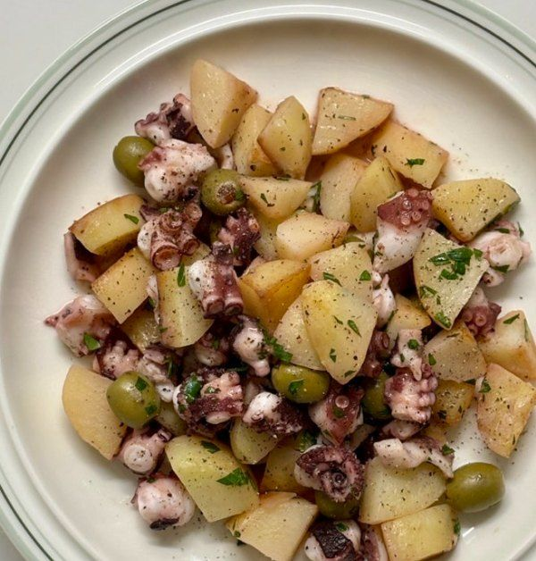
재료 감자 2개, 베이컨 2장, 부침가루, 소금 약간, 오일
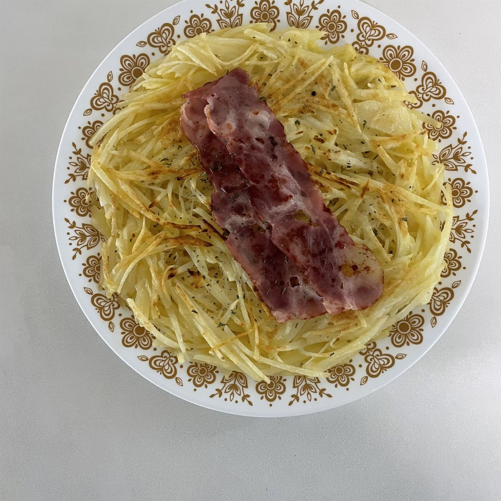
재료 감자 3~4개, 올리브오일, 소금, 후추, 로즈마리 잎
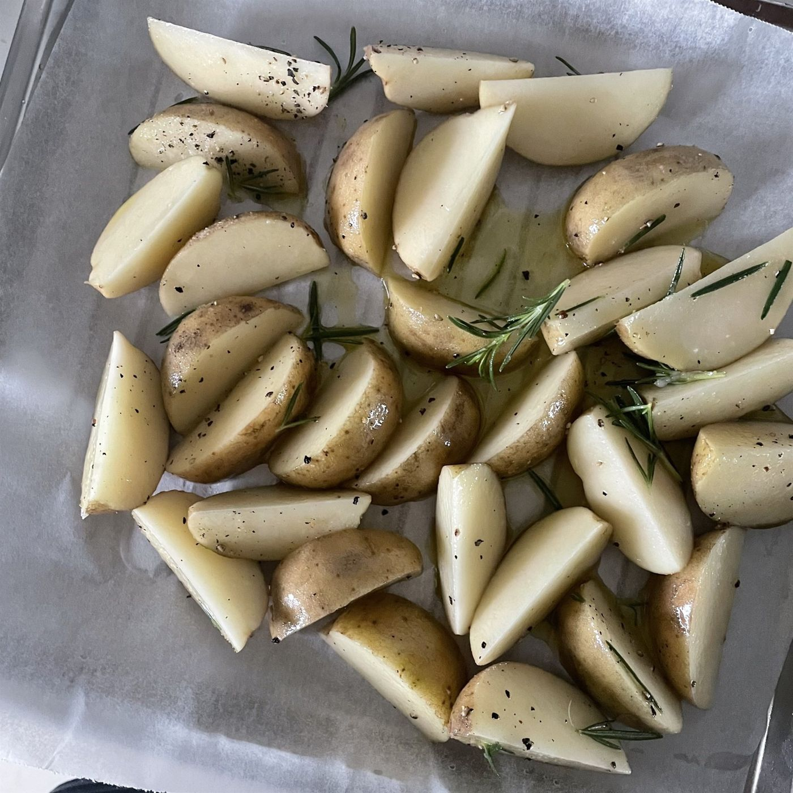
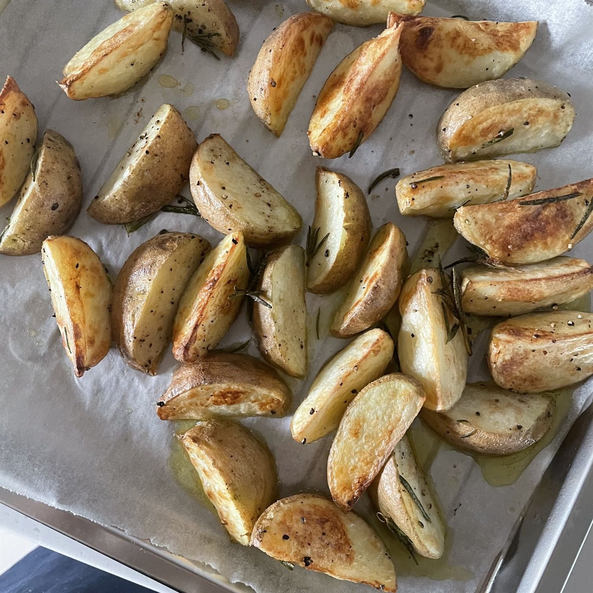
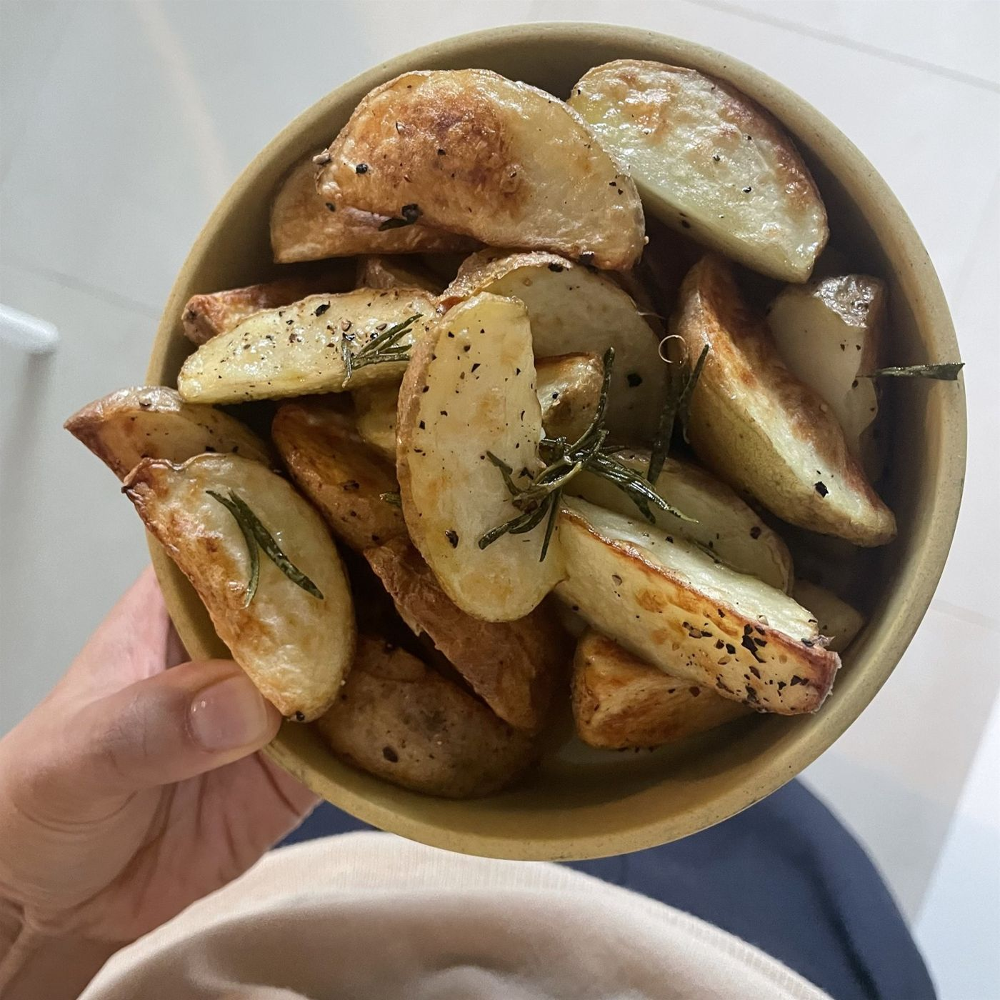
선선한 바람과 함께 깊어 가는 10월. 옷차림이 바뀌듯 메이크업에도 계절의 변화가 필요하다. 혹시 사계절 내내 똑같은 방식의 메이크업을 고수하고 있지는 않은지. 차갑고 건조한 가을 공기 속에서 필요한 건 얼굴 위에 과함 없이 은은하게 흘러내리는 맑은 윤기다.
이번 가을엔 여름내 쓰던 매트한 파운데이션과 팩트는 잠시 놓아두자. 대신 피부 본연의 힘을 지키고 촉촉한 온기를 채워 줄 BB크림으로 메이크업 옷을 갈아입을 때다. 물론 파운데이션만큼의 완벽한 커버나 오랜 유지력은 아닐지도 모른다. 하지만 BB크림에는 자연스러운 피부 보정과 함께, 바람 앞에서도 당김 없이 피부를 다정하게 감싸 주는 매력이 있다.
건성 피부라면 수분과 영양이 풍부한 BB크림으로 피부 톤을 정돈해 보자. 하루 종일 은은한 윤광이 머무는 촉촉한 피부를 선물해 준다. 복합성·지성 피부라면 속건조는 채워 주되 제형은 가볍고 산뜻한 쪽이 좋다. 답답함 없이 편안한 피부 바탕을 완성할 수 있다. 내 피부의 스펙트럼과 필요에 맞는 커버력을 골라 가볍게 얹어 줄 것.
이번 가을, 차가운 바람 속에서도 내 피부만큼은 편안하고 촉촉하게. BB크림 하나로 자연스럽게 빛나는 가을빛 피부를 완성해 보길.
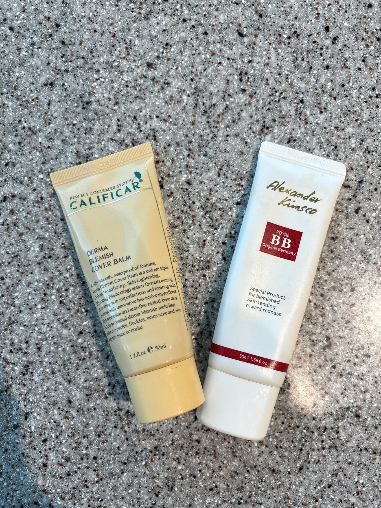
매트 파운데이션·팩트. 여름의 문법은 서랍에.
건성은 수분·영양이 풍부한 제형, 복합성·지성은 속건조만 채우는 가볍고 산뜻한 제형.
커버력은 내 피부만큼만. 과함 없이 얇게, 윤기가 남도록.
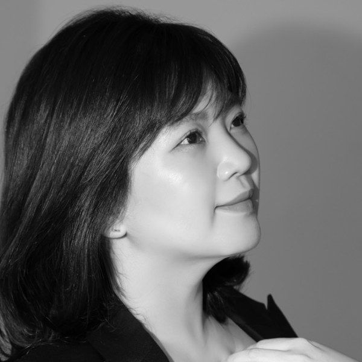
10월호는 일과 일 사이를 걸었습니다. 책상 위에는 아직 몇 개의 질문이 남아 있습니다. 예술로 먹고살 수 있는가, 예술은 누구의 것인가, 그리고 9월호에서 약속한 조합과 성산의 장부. 어느 것을 먼저 집어 들지는 정해 두지 않았습니다. 명랑사회는 필자의 원고가 도착하는 순서대로, 그달의 책상이 허락하는 만큼 만듭니다. 좋은 질문을 알고 계신 분은 언제든 연구소로 — hello@myeongrang.org
「월간 집밥연구소」 「맥시멀리스트의 방」 「부리의 명랑음악당」 「명랑 건강」 — 이 넷은 다음 호에도 그 자리에 있습니다. 나머지 방들은 필자가 문을 열면 켜집니다. 여행기는 길이 정해 주고, 전시관람기는 전시가 정해 주고, 뷰티와 건축 산책은 그달의 손이 정해 줍니다. 어느 방이 켜질지 미리 세어 두지 않기로 했습니다. 세게 붙잡으면 부서지니까요.
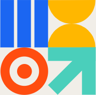